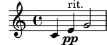
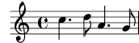
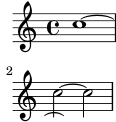

| [Top][Contents][Index] |
LilyPond — Extender
|
Aquest fitxer explica la forma d’estendre les funcionalitats del LilyPond versió 2.26.0. |
| Appendix A Tutorial de l’Scheme | Programació des de dins del LilyPond. | |
| B Interfícies per a programadors | Com interactuar amb l’Scheme. | |
| C Interfícies de l’Scheme del LilyPond | Obtenir informació cap a dins i cap a fora de la música | |
Apèndixs | ||
|---|---|---|
| Appendix D GNU Free Documentation License | Llicència d’aquest document. | |
| Appendix E Índex del LilyPond | ||
|
Per a més informació sobre la forma en la qual aquest manual es relaciona amb la resta de la documentació, o per llegir aquest manual en altres formats, consulteu Manuals. Si us falta algun manual, trobareu tota la documentació a https://lilypond.org/. |
| [ << Top ] | [Top][Contents][Index] | [ Interfícies per a programadors >> ] |
| [ < Top ] | [ Up: Top ] | [ Introducció a l’Scheme > ] |
Appendix A Tutorial de l’Scheme
El LilyPond s’utilitza el llenguatge de programació Scheme, tant com part de la sintaxi del codi d’entrada, com per servir de mecanisme intern que uneix els mòduls del programa entre sí. Aquesta secció és una panoràmica molt breu sobre com introduir dades a l’Scheme. Si voleu saber més sobre l’Scheme, consulteu https://www.schemers.org.
El LilyPond utilitza la implementació GNU Guile de l’Scheme, que està basa en l’estàndard “R5RS” del llenguatge. Si esteu aprenent l’Scheme per usar-lo amb el LilyPond, no es recomana treballar amb una implementació diferent (o que es refereixi a un estàndard diferent). Hi ha una informació sobre el Guile a https://www.gnu.org/software/guile/. L’estàndard de l’Scheme “R5RS” es troba a https://www.schemers.org/Documents/Standards/R5RS/.
| A.1 Introducció a l’Scheme | ||
| A.2 Scheme dins del LilyPond | ||
| A.3 Construcció de funcions complicades |
| [ << Tutorial de l’Scheme ] | [Top][Contents][Index] | [ Interfícies per a programadors >> ] |
| [ < Tutorial de l’Scheme ] | [ Up: Tutorial de l’Scheme ] | [ Banc de sorra de l’Scheme > ] |
A.1 Introducció a l’Scheme
Començarem amb una introducció a l’Scheme. Per a aquesta breu introducció utilitzarem l’intèrpret Guile per explorar la manera en la qual el llenguatge funciona. Un cop ens haguem familiaritzat amb l’Scheme, mostrarem com es pot integrar el llenguatge als arxius del LilyPond.
| [ << Tutorial de l’Scheme ] | [Top][Contents][Index] | [ Interfícies per a programadors >> ] |
| [ < Introducció a l’Scheme ] | [ Up: Introducció a l’Scheme ] | [ Variables de l’Scheme > ] |
A.1.1 Banc de sorra de l’Scheme
La instal·lació del LilyPond inclou també la de la implementació
Guile de l’Scheme. Es pot experimentar a un “banc de sorra” de
l’Scheme obrint una finestra del terminal i teclejant
‘guile’. En alguns sistemes, sobretot al Windows, pot caldre
ajustar la variable d’entorn GUILE_LOAD_PATH a la carpeta
../usr/share/guile/1.8 dins de la instal·lació del LilyPond
(per conèixer la ruta completa a aquesta carpet, consulteu
Altres fonts
d’informació). Com alternativa, els usuaris del Windows poden
seleccionar simplement ‘Executar’ del menú Inici i introduir
‘guile’.
No obstant, està disponible un banc de sorra de l’Scheme llest per funcionar amb tot el LilyPond carregat, amb aquesta ordre a la línia d’ordres:
lilypond scheme-sandbox
Un cop està funcionant el banc de sorra, veureu un indicador del sistema de Guile:
guile>
Podem introduir expressions de l’Scheme en aquest indicador per experimentar amb l’Scheme. Si voleu usar la biblioteca readline de GNU per a una més còmoda edició de la línia d’ordres de l’Scheme, consulteu el fitxer ly/scheme-sandbox.ly per a més informació. Si ja heu activat la biblioteca readline per a les sessions de Guile interactives fora del LilyPond, hauria de funcionar també en el banc de sorra.
| [ << Tutorial de l’Scheme ] | [Top][Contents][Index] | [ Interfícies per a programadors >> ] |
| [ < Banc de sorra de l’Scheme ] | [ Up: Introducció a l’Scheme ] | [ Tipus de dades simples de l’Scheme > ] |
A.1.2 Variables de l’Scheme
Les variables de l’Scheme poden tenir qualsevol volar vàlid de l’Scheme, fins i tot un procediment de l’Scheme.
Les variables de l’Scheme es creen amb define:
guile> (define a 2) guile>
Les variables de l’Scheme es poden avaluar a l’indicador del sistema del Guile, simplement teclejant el nom de la variable:
guile> a 2 guile>
Les variables de l’Scheme es poden imprimir en la pantalla utilitzant la funció display:
guile> (display a) 2guile>
Observeu que el valor 2 i l’indicador del sistema
guile es mostren en la mateixa línia. Això es pot evitar
cridant al procediment de la nova línia o imprimint un caràcter de
la nova línia.
guile> (display a)(newline) 2 guile> (display a)(display "\n") 2 guile>
Un cop que s’ha creat una variable, el seu valor es pot modificar
amb set!:
guile> (set! a 12345) guile> a 12345 guile>
| [ << Tutorial de l’Scheme ] | [Top][Contents][Index] | [ Interfícies per a programadors >> ] |
| [ < Variables de l’Scheme ] | [ Up: Introducció a l’Scheme ] | [ Tipus de dades compostes de l’Scheme > ] |
A.1.3 Tipus de dades simples de l’Scheme
El concepte més bàsic d’una llenguatge els seus tipus de dades: números, cadenes de caràcters, llistes, etc. Vet aquí una llista dels tipus de dades que són de rellevància respecte de l’entrada del LilyPond.
- Booleans
Els valors Booleans són Vertader i Fals. Vertader en l’Scheme és
#ti Fals és#f.- Números
Els nombres s’escriuen de la forma normal,
1és el nombre (enter) u, mentre que-1.5és un nombre en coma flotant (un nombre no enter).- Cadenes
Las cadenes s’envolten entre cometes:
"això és una cadena"
Les cadenes poden abastar diverses línies:
"això és una cadena"
i els caràcters de línia nova al final de cada línia s’inclouran dins de la cadena.
Els caràcters de línia nova també es poden afegir mitjançant la inclusió de
\nen la cadena."això\nés una\ncadena de diverses línies"
Les cometes dobles i barres invertides s’afegeixen a les cadenes precedint-les d’una barra invertida. La cadena
\a va dir "b"s’introdueix com"\\a va dir \"b\""
Existeixen més tipus de dades de l’Scheme que no s’estudien aquí. Per veure un llistat complet, consulteu la guia de referència del Guile, https://www.gnu.org/software/guile/manual/html_node/Data-Types.html.
| [ << Tutorial de l’Scheme ] | [Top][Contents][Index] | [ Interfícies per a programadors >> ] |
| [ < Tipus de dades simples de l’Scheme ] | [ Up: Introducció a l’Scheme ] | [ Parelles > ] |
A.1.4 Tipus de dades compostes de l’Scheme
També hi ha tipus de dades compostes a l’Scheme. Entre els tipus més usats en la programació del LilyPond es troben les parelles, les llistes, les llistes-A i les tables de hash.
| Parelles | ||
| Llistes | ||
| Llistes associatives (llistes-A) | ||
| Taules de hash |
| [ << Tutorial de l’Scheme ] | [Top][Contents][Index] | [ Interfícies per a programadors >> ] |
| [ < Tipus de dades compostes de l’Scheme ] | [ Up: Tipus de dades compostes de l’Scheme ] | [ Llistes > ] |
Parelles
El tipus fundacional de dades compostes de l’Scheme és la
parella. Com s’espera pel seu nom, una parella són dos
valores units en un de sol. L’operador que s’usa per formar una
parella es diu cons.
guile> (cons 4 5) (4 . 5) guile>
Observeu que la parella s’imprimeix com dos elements rodejats per
parèntesis i separats per un espai, un punt (.) i un altre
espai. El punt no és un punt decimal, si no més bé un
indicador de parella.
Les parelles es poden introduir com valors literals precedint-los d’un caràcter de cometa simple o apòstrof.
guile> '(4 . 5) (4 . 5) guile>
Els dos elements d’una parella poden ser qualsevol valor vàlid de l’Scheme:
guile> (cons #t #f)
(#t . #f)
guile> '("bla-bla" . 3.1415926535)
("bla-bla" . 3.1415926535)
guile>
Es pot accedir al primer i segon elements de la parella mitjançant
els procediments de l’Scheme car u cdr,
respectivament.
guile> (defineix lamevaparella (cons 123 "Hola") … ) guile> (car lamevaparella) 123 guile> (cdr lamevaparella) "Hola" guile>
Nota: cdr es pronuncia "could-er", segons Sussman i Abelson,
vegeu
https://mitpress.mit.edu/sites/default/files/sicp/full-text/book/book-Z-H-14.html#footnote_Temp_133
| [ << Tutorial de l’Scheme ] | [Top][Contents][Index] | [ Interfícies per a programadors >> ] |
| [ < Parelles ] | [ Up: Tipus de dades compostes de l’Scheme ] | [ Llistes associatives (llistes-A) > ] |
Llistes
Una estructura de dades molt comuna a l’Scheme és la
llista. Formalment, una llista ‘ben feta’ es defineix com
la llista buida, representada com a '() i amb longitud
zero, o bé com una parella el cdr de la qual és al seu cop
una llista més curta.
Hi ha moltes formes de crear llistes. Potser la més comuna és amb
el procediment list:
guile> (list 1 2 3 "abc" 17.5) (1 2 3 "abc" 17.5)
La representació d’una llista com a elements individuals separats per espais i envoltada entre parèntesis és realment una forma compacta de les parelles amb punt que constitueixen la llista, on el punt i immediatament un parèntesis d’obertura se suprimeixen junt al parèntesis de tancament corresponent. Sense aquesta compactació, la sortida hauria estat
(1 . (2 . (3 . ("abc" . (17.5 . ())))))
De la mateixa manera que com la sortida, una llista pot escriure’s (després d’haver afegit un apòstrof per evitar la seva interpretació com una crida de funció) com una llista literal envoltant els seus elements entre parèntesis:
guile> '(17 23 "pep" "pepet" "pepepet") (17 23 "pep" "pepet" "pepepet")
Les llistes són una part fonamental de l’Scheme. De fet, l’Scheme es considera un dialecte del Lisp, on ‘lisp’ és una abreviatura de ‘List Processing’ (procés de llistes). Totes les expressions de l’Scheme són llistes.
| [ << Tutorial de l’Scheme ] | [Top][Contents][Index] | [ Interfícies per a programadors >> ] |
| [ < Llistes ] | [ Up: Tipus de dades compostes de l’Scheme ] | [ Taules de hash > ] |
Llistes associatives (llistes-A)
Un tipus especial de llistes són les llistes associatives o llistes-A. Es pot usar una llista-A per emmagatzemar dades per a la seva fàcil recuperació posterior.
Les llistes-A són llistes els elements de les quals són parelles. El
car de cada element es diu clau, i el cdr
de cada element es diu valor. El procediment de l’Scheme
assoc s’usa per recuperar el valor:
guile> (defineix la-meva-llista-a '((1 . "A") (2 . "B") (3 . "C"))) guile> la-meva-llista-a ((1 . "A") (2 . "B") (3 . "C")) guile> (assoc 2 la-meva-llista-a) (2 . "B") guile> (cdr (assoc 2 la-meva-llista-a)) "B" guile>
Les llistes-A s’usen molt al LilyPond per emmagatzemar propietats i altres dades.
| [ << Tutorial de l’Scheme ] | [Top][Contents][Index] | [ Interfícies per a programadors >> ] |
| [ < Llistes associatives (llistes-A) ] | [ Up: Tipus de dades compostes de l’Scheme ] | [ Càlculs a l’Scheme > ] |
Taules de hash
Estructures de dades que s’usen al LilyPond de forma ocasional. Una Taula de hash és semblant a una matriu, però els índexs de la matriu poden ser qualsevol tipus de valor de l’Scheme, no sols enters.
Les taules de hash són més eficients que les llistes_a si hi ha una gran quantitat de dades a emmagatzemar i les dades canvien amb molt poca freqüència.
La sintaxi per crear taules de hash és una mica complexa, però veurem exemples d’això al codi font del LilyPond.
guile> (defineix h (make-hash-table 10)) guile> h #<hash-table 0/31> guile> (hashq-set! h 'key1 "val1") "val1" guile> (hashq-set! h 'key2 "val2") "val2" guile> (hashq-set! h 3 "val3") "val3"
Els valors es recuperen de les taules de hash mitjançant
hashq-ref.
guile> (hashq-ref h 3) "val3" guile> (hashq-ref h 'key2) "val2" guile>
Les claus i els valors es recuperen com una parella amb
hashq-get-handle. Aquesta és la forma preferida, perquè
retorna #f si no es troba la clau.
guile> (hashq-get-handle h 'key1) (key1 . "val1") guile> (hashq-get-handle h 'frob) #f guile>
| [ << Tutorial de l’Scheme ] | [Top][Contents][Index] | [ Interfícies per a programadors >> ] |
| [ < Taules de hash ] | [ Up: Introducció a l’Scheme ] | [ Procediments de l’Scheme > ] |
A.1.5 Càlculs a l’Scheme
L’Scheme es pot usar per fer càlculs. Utilitza sintaxi
prefixa. Sumar 1 i 2 s’escriu com (+ 1 2) i
no com el tradicional 1+2.
guile> (+ 1 2) 3
Els càlculs es poden niuar; el resultat d’una funció es pot usar per a un altre càlcul.
guile> (+ 1 (* 3 4)) 13
Aquests càlculs són exemple d’avaluacions; una expressió com
(* 3 4) es substitueix pel seu valor 12.
Els càlculs de l’Scheme són sensibles a les diferències entre enters i no enters. Els càlculs enters són exactes, mentre que els no enters es calculen amb els límits de precisió adequats:
guile> (/ 7 3) 7/3 guile> (/ 7.0 3.0) 2.33333333333333
Quan l’intèrpret de l’Scheme troba una expressió que és una llista, el primer element de la llista es tracta com un procediment a avaluar amb els arguments de la resta de la llista. Per tant, tots els operadors a l’Scheme són operadors prefixos.
Si el primer element d’una expressió de l’Scheme que és una llista que es passa a l’intèrpret no és un operador o un procediment, es produeix un error:
guile> (1 2 3) Backtrace: In current input: 52: 0* [1 2 3] <unnamed port>:52:1: In expression (1 2 3): <unnamed port>:52:1: Wrong type to apply: 1 ABORT: (misc-error) guile>
Aquí podem veure que l’intèrpret estava intentant tractar l’1 com un operador o procediment, i no ho va poder fer. D’aquí que l’error sigui "Wrong type to apply: 1".
Així doncs, per crear una llista hem d’usar l’operador de llista, o podem precedir-la d’un apòstrof perquè l’intèrpret no intenti avaluar-la.
guile> (list 1 2 3) (1 2 3) guile> '(1 2 3) (1 2 3) guile>
Això és un error que pot aparèixer quan treballeu amb l’Scheme dins del LilyPond.
| [ << Tutorial de l’Scheme ] | [Top][Contents][Index] | [ Interfícies per a programadors >> ] |
| [ < Càlculs a l’Scheme ] | [ Up: Introducció a l’Scheme ] | [ Definició de procediments > ] |
A.1.6 Procediments de l’Scheme
Els procediments de l’Scheme són expressions de l’Scheme executables que retornen un valor resultant de la seva execució. També poden manipular variables definides fora del procediment.
| Definició de procediments | ||
| Predicats | ||
| Valors de retorn |
| [ << Tutorial de l’Scheme ] | [Top][Contents][Index] | [ Interfícies per a programadors >> ] |
| [ < Procediments de l’Scheme ] | [ Up: Procediments de l’Scheme ] | [ Predicats > ] |
Definició de procediments
Els procediments es defineixen a l’Scheme amb define:
(define (nom-de-la-funció arg1 arg2 ... argn) expressió-de-scheme-que-retorna-un-valor)
Per exemple, podem definir un procediment per calcular la mitjana:
guile> (define (mitjana x y) (/ (+ x y) 2)) guile> mitjana #<procedure mitjana (x y)>
Un cop definit un procediment, es crida posant el nom del procediment dins d’una llista. Per exemple, podem calcular la mitjana de 3 i 12:
guile> (mitjana 3 12) 15/2
| [ << Tutorial de l’Scheme ] | [Top][Contents][Index] | [ Interfícies per a programadors >> ] |
| [ < Definició de procediments ] | [ Up: Procediments de l’Scheme ] | [ Valors de retorn > ] |
Predicats
Els procediments de l’Scheme que retornen valors booleans se solen anomenar predicats. Por convenció (però no per necessitat), els noms de predicats acaben en un signe d’interrogació:
guile> (define (menor-que-deu? x) (< x 10)) guile> (menor-que-deu? 9) #t guile> (menor-que-deu? 15) #f
| [ << Tutorial de l’Scheme ] | [Top][Contents][Index] | [ Interfícies per a programadors >> ] |
| [ < Predicats ] | [ Up: Procediments de l’Scheme ] | [ Condicionals de l’Scheme > ] |
Valors de retorn
Els procediments de l’Scheme sempre retornen un valor de retorn, que és el valor de l’última expressió executada al procediment. El valor de retorn pot ser qualsevol valor de l’Scheme vàlid, fins i tot una estructura de dades complexa o un procediment.
A vegades, l’usuari vol tenir diverses expressions de l’Scheme
dins d’un procediment. Hi ha dues formes en la qual es poden
combinar diferents expressions. La primera és el procediment
begin, que permet avaluar diverses expressions, i retorna
el valor de l’última expressió.
guile> (begin (+ 1 2) (- 5 8) (* 2 2)) 4
La segona forma de combinar diverses expressions és dins d’un bloc
let. Dins d’un bloc let, es creen una sèrie de lligadures
o assignacions, i després s’avalua una seqüència d’expressions que
poden incloure aquestes lligadures o assignacions. El valor de
retorn del bloc let és el valor de retorn de l’última sentència
del bloc let:
guile> (let ((x 2) (y 3) (z 4)) (display (+ x y)) (display (- z 4)) … (+ (* x y) (/ z x))) 508
| [ << Tutorial de l’Scheme ] | [Top][Contents][Index] | [ Interfícies per a programadors >> ] |
| [ < Valors de retorn ] | [ Up: Introducció a l’Scheme ] | [ if > ] |
A.1.7 Condicionals de l’Scheme
| if | ||
| cond |
| [ << Tutorial de l’Scheme ] | [Top][Contents][Index] | [ Interfícies per a programadors >> ] |
| [ < Condicionals de l’Scheme ] | [ Up: Condicionals de l’Scheme ] | [ cond > ] |
if
L’Scheme té un procediment if:
(if expressió-de-prova expressió-de-cert expressió-de-fals)
expressió-de-prova és una expressió que retorna un valor
booleà. Si expressió-de-prova retorna #t, el
procediment if retorna el valor de la
expressió-de-cert, en cas contrari retorna el valor de
la expressió-de-fals.
guile> (define a 3) guile> (define b 5) guile> (if (> a b) "a és més gran que b" "a no és més gran que b") "a no és més gran que b"
| [ << Tutorial de l’Scheme ] | [Top][Contents][Index] | [ Interfícies per a programadors >> ] |
| [ < if ] | [ Up: Condicionals de l’Scheme ] | [ Scheme dins del LilyPond > ] |
cond
Un altre procediment condicional a l’Scheme és cond:
(cond (expressió-de-prova-1 seqüència-de-expressions-resultant-1)
(expressió-de-prova-2 seqüència-de-expressions-resultant-2)
…
(expressió-de-prova-n seqüència-de-expressions-resultant-n)
Per exemple:
guile> (define a 6) guile> (define b 8) guile> (cond ((< a b) "a és més petit que b") ... ((= a b) "a és igual a b") ... ((> a b) "a és més gran que b")) "a és més petit que b"
| [ << Tutorial de l’Scheme ] | [Top][Contents][Index] | [ Interfícies per a programadors >> ] |
| [ < cond ] | [ Up: Tutorial de l’Scheme ] | [ Sintaxi de l’Scheme del LilyPond > ] |
A.2 Scheme dins del LilyPond
| [ << Tutorial de l’Scheme ] | [Top][Contents][Index] | [ Interfícies per a programadors >> ] |
| [ < Scheme dins del LilyPond ] | [ Up: Scheme dins del LilyPond ] | [ Variables del LilyPond > ] |
A.2.1 Sintaxi de l’Scheme del LilyPond
L’intèrpret Guile forma part del LilyPond, cosa que significa que es pot incloure Scheme dins dels fitxers d’entrada del LilyPond. Hi ha diversos mètodes per incloure Scheme dins del LilyPond.
La manera més fàcil és utilitzar el símbol de
coixinet # abans d’una expressió de l’Scheme.
Ara bé, el codi d’entrada del LilyPond s’estructura en elements i expressions, de forma semblant a com el llenguatge humà s’estructura en paraules i frases. El LilyPond té un analitzador lèxic que reconeix elements indivisibles (nombres literals, cadenes de text, elements de l’Scheme, noms de nota, etc.), i un analitzador que entén la sintaxi. Un cop que sap que s’aplica una regla sintàctica concreta, executa les accions associades amb ella.
El mètode del símbol coixinet # per incrustar Scheme
s’adapta de forma natural a aquest sistema. Un cop que
l’analitzador lèxic veu un símbol de coixinet, crida al lector de
l’Scheme perquè llegeixi una expressió de l’Scheme completa (que
pot ser un identificador, una expressió envoltada entre
parèntesis, o algunes altes coses). Després que s’hagi llegit
l’expressió de l’Scheme, s’emmagatzema com el valor d’un element
SCM_TOKEN de la gramàtica. Després que el analitzador
sintàctic ja sap com fer ús d’aquest element, crida a Guile perquè
avaluï l’expressió de Scheme. Atès que l’analitzador sintàctic
sol requerir una mica de lectura per endavant per part de
l’analitzador lèxic per prendre les seves decisions d’anàlisi
sintàctica, aquesta separació de lectura i avaluació entre els
analitzadors lèxic i sintàctic és justament el que cal per
mantenir sincronitzades les execucions d’expressions del LilyPond
i de l’Scheme. Per aquest motiu s’ha d’usar el símbol de
coixinet # per cridar a l’Scheme sempre que sigui
possible.
Una altra forma de cridar a l’intèrpret de l’Scheme des del
LilyPond és l’ús del símbol de dòlar $ enlloc del
coixinet per introduir les expressions de l’Scheme. En aquest
cas, el LilyPond avalua el codi just després que l’analitzador
lèxic l’hagi llegit. Comprova el tipus resultant de l’expressió
de l’Scheme i després selecciona un tipus d’element (un dels
diversos elements xxx_IDENTIFIER dins de la sintaxi) per a
ell. Crea una còpia del valor i l’usa com a valor de
l’element. Si el valor de l’expressió és buit (El valor del Guile
de *unspecified*), no es passa res en absolut a
l’analitzador sintàctic.
Aquest és, de fet, el mateix mecanisme exactament que el LilyPond
fa servir quan cridem a qualsevol variable o funció musical pel
seu nom, com \nom, amb l’única diferència que el nom ve
determinat per l’analitzador lèxic del LilyPond sense consultar al
lector de l’Scheme, i així solament s’accepten els noms de
variable consistents amb el mode actual del LilyPond.
L’acció immediata de $ pot portar a alguna que altra
sorpresa, vegeu Importació de l’Scheme dins del LilyPond. La
utilització de # on l’analitzador sintàctic li dóna suport
és normalment preferible. Dins de les expressions musicals,
aquelles que es creen utilitzant # s’interpreten com
a música. No obstant, no es copien abans de ser
utilitzades. Si formen part d’alguna estructura que encara podria
tenir algun ús, potser hàgiu de fer servir explícitament
ly:music-deep-copy.
També hi ha els operadors de ‘divisió de llistes’
$@ i #@ que insereixen tots els elements d’una
llista dins del context que l’envolta.
Ara fem una ullada a alguna cosa de codi de l’Scheme real. Els procediments de l’Scheme es poden definir dins dels fitxers d’entrada del LilyPond:
#(define (mitjana a b c) (/ (+ a b c) 3))
Observeu que els comentaris del LilyPond (% y %{
%}) no es poden utilitzar dins del codi de l’Scheme, ni tan sols
dins d’un fitxer d’entrada del LilyPond, perquè és l’intèrpret
Guile, i no l’analitzador lèxic del LilyPond, el que està llegint
l’expressió de l’Scheme. Els comentaris a l’Scheme del Guile
s’introdueixen de la manera següent:
; això és un comentari d'una línia #! Això és un comentari de bloc (que no es pot niuar) estil Guile Però s'usen en comptades ocasions pels Schemer i mai dins del codi fon del LilyPond !#
Durant la resta d’aquesta secció suposarem que les dades
s’introdueixen en un fitxer de música, per la qual cosa afegim un
coixinet # al principi de cada una de les
expressions de l’Scheme.
Totes les expressions de l’Scheme del nivell jeràrquic superior
dins d’un fitxer d’entrada del LilyPond es poden combinar en una
sola expressió de l’Scheme mitjançant la utilització de l’operador
begin:
#(begin (define Pep 0) (define Pepet 1))
| [ << Tutorial de l’Scheme ] | [Top][Contents][Index] | [ Interfícies per a programadors >> ] |
| [ < Sintaxi de l’Scheme del LilyPond ] | [ Up: Scheme dins del LilyPond ] | [ Variables d’entrada i l’Scheme > ] |
A.2.2 Variables del LilyPond
Les variables del LilyPond s’emmagatzemen internament en la forma de variables de l’Scheme. Així,
dotze = 12
equival a
#(define dotze 12)
Això significa que les variables del LilyPond estan disponibles per al seu ús dins d’expressions de l’Scheme. Per exemple, podríem usar
vintiQuatre = (* 2 dotze)
cosa que faria que el nombre 24 s’emmagatzemés dins de la
variable vintiQuatre del LilyPond (i de l’Scheme).
El llenguatge Scheme permet la modificació d’expressions complexes
in situ i el LilyPond fa ús d’aquesta ‘modificació in situ’ en
fer servir funcions musicals. Però quan les expressions musicals
s’emmagatzemen dins de variables en lloc de ser intruïdes
directament, el que habitualment s’espera quan es passen
funcions musicals seria que el valor original quedés intacte.
Així doncs, quan es fa referència a una variable musical amb la
barra invertida (com ara \vintiQuatre), el LilyPond crea
una còpia del valor musical d’aquesta variable per utilitzar-la
dins de l’expressió musical que l’envolta, enlloc d’usar el valor
de la variable directament.
Per això, les expressions musicals de l’Scheme escrites amb la
sintaxi de coixinet # s’haurien d’utilitzar per a qualsevol
material creat ‘partint de zero’ (o que s’hagi copiat
explícitament) enlloc d’utilitzar-se per fer referència a música
directament.
Vegeu també
Manual de extensió: Sintaxi de l’Scheme del LilyPond.
| [ << Tutorial de l’Scheme ] | [Top][Contents][Index] | [ Interfícies per a programadors >> ] |
| [ < Variables del LilyPond ] | [ Up: Scheme dins del LilyPond ] | [ Importació de l’Scheme dins del LilyPond > ] |
A.2.3 Variables d’entrada i l’Scheme
El format d’entrada inclou la noció de variables: a l’exemple
següent, s’assigna una expressió musical a una variable amb el
nom de traLaLa.
traLaLa = { c'4 d'4 }
També hi ha una forma d’àmbit: a l’exemple següent, el bloc
\layout també conté una variable traLaLa, que és
independent de la \traLaLa externa.
traLaLa = { c'4 d'4 }
\layout { traLaLa = 1.0 }
En efecte, cada fitxer d’entrada constitueix un àmbit, i cada bloc
\header, \midi i \layout son àmbits niuats
dins de l’àmbit de nivell superior.
Tant les variables com els àmbits estan implementats al sistema de mòduls del Guile. A cada àmbit s’adjunta un mòdul anònim de l’Scheme. Una assignació de la forma:
traLaLa = { c'4 d'4 }
es converteix internament en una definició de l’Scheme:
(define traLaLa Valor Scheme de `…')
Això significa que les variables del LilyPond i les variables de
l’Scheme es poden barregar amb llibertat. A l’exemple següent,
s’emmagatzema un fragment de música a la variable traLaLa,
i es duplica usant l’Scheme. El resultat s’importa dins d’un bloc
\score per mitjà d’una segona variable twice:
traLaLa = { c'4 d'4 } #(define newLa (map ly:music-deep-copy (list traLaLa traLaLa))) #(define twice (make-sequential-music newLa)) \twice
![[image of music]](c8/lily-79e9e275.png)
En realitat, això és un exemple força interessant. L’assignació
sols té lloc després que l’analitzador sintàctic s’ha assegurat
que no segueix res semblant a \addlyrics, de manera que cal
comprovar el que ve a continuació. Llegeix el símbol # i
l’expressió de l’Scheme següent sense avaluar-la, de forma
que pot procedir a l’assignació, i posteriorment executar
el codi de l’Scheme sense problema.
| [ << Tutorial de l’Scheme ] | [Top][Contents][Index] | [ Interfícies per a programadors >> ] |
| [ < Variables d’entrada i l’Scheme ] | [ Up: Scheme dins del LilyPond ] | [ Propietats dels objectes > ] |
A.2.4 Importació de l’Scheme dins del LilyPond
L’exemple anterior mostra com ‘exportar’ expressions musicals
des de l’entrada a l’intèrpret de l’Scheme. El contrari també és
possible. Col·locant-lo després de $, un valor de l’Scheme
s’interpreta com si hagués estat introduït en la sintaxi del
LilyPond. En comptes de definir \twice, l’exemple anterior
podria també haver-se escrit com
… $(make-sequential-music newLa)
Podem utilitzar $ amb una expressió de l’Scheme a qualsevol
lloc en el qual usaríem \nom després d’haver assignat
l’expressió de l’Scheme a una variable nom. Aquesta
substitució es produeix dins de l’‘analitzador lèxic’, de manera
que el LilyPond no arriba a assabentar-se de la diferència.
No obstant, hi ha un inconvenient, el de la mesura del temps. Si
haguéssim estat usant $ en comptes de # per definir
newLa a l’exemple anterior, la següent definició de
l’Scheme hagués fracassat perquè traLaLa no hauria estat
definida encara. Per veure una explicació d’aquest problema de
moment temporal, vegeu Sintaxi de l’Scheme del LilyPond.
Un aspecte posterior convenient poden ser els operadors d
‘divisió de llistes’ $@ i #@ per a la inserció
dels elements d’una llista dins del context que l’envolta.
Utilitzant-los, l’última part de l’exemple es podria haver escrit
com
como
…
{ #@newLa }
Aquí, cada element de la llista que està emmagatzemat a
newLa s’agafa en seqüència i s’insereix a la llista, com si
haguéssim escrit
{ #(first newLa) #(second newLa) }
Ara bé, en totes aquestes formes, el codi de l’Scheme s’avalua en el moment en el qual el codi d’entrada encara s’està processant, ja sigui a l’analitzador lèxic o a l’analitzador sintàctic. Si ens ca que s’executi en un moment posterior, hem de consultar Funcions de l’Scheme buides, o emmagatzemar-ho dins d’un procediment.
#(define (nopc)
(ly:set-option 'point-and-click #f))
…
#(nopc)
{ c'4 }
Advertiments i problemes coneguts
No és possible barregar variables de l’Scheme i del LilyPond amb l’opció --safe.
A.2.5 Propietats dels objectes
Les propietats dels objectes s’emmagatzemen al LilyPond en forma de cadenes de llistes-A, que són de llistes-A. Les propietats s’estableixen afegint valors al principi de la llista de propietats. Les propietats es llegeixen extraient valors de les llistes-A.
L’establiment d’un valor nou per a una propietat requereix l’assignació d’un valor a la llista-A amb una clau i un valor. La sintaxi del LilyPond per fer això és la següent:
\override Stem.thickness = #2.6
Aquesta ordre ajusta l’aspecte de les pliques. S’afegeix una
entrada de llista-A '(thickness . 2.6) a la llista de
propietats d’un objecte Stem. thickness es mesura a
partir del gruix de les línies del pentagrama, i així aquestes
pliques seran 2.6 vegades el gruix de les línies del
pentagrama. Això fa que les pliques siguin gairebé el doble de
gruixudes del normal. Per distingir entre les variables que es
defineixen als fitxers d’entrada (como vintiQuatre a
l’exemple anterior) i les variables dels objectes propers,
anomenarem a les últimes ‘propietats’ i a les primeres
‘variables.’ Així, l’objecte plica té una propietat
thickness (gruix), mentre que vintiQuatre és una
variable.
| [ << Tutorial de l’Scheme ] | [Top][Contents][Index] | [ Interfícies per a programadors >> ] |
| [ < Propietats dels objectes ] | [ Up: Scheme dins del LilyPond ] | [ Desplaçaments > ] |
A.2.6 Variables del LilyPond compostes
| Desplaçaments | ||
| Fraccions | ||
| Dimensions | ||
| Llistes-A de propietats | ||
| Cadenes de llistes-A |
| [ << Tutorial de l’Scheme ] | [Top][Contents][Index] | [ Interfícies per a programadors >> ] |
| [ < Variables del LilyPond compostes ] | [ Up: Variables del LilyPond compostes ] | [ Fraccions > ] |
Desplaçaments
Els desplaçaments bidimensionals (coordenades X i Y)
s’emmagatzemen com parelles. El car del
desplaçament és la coordenada X, i el cdr és la
coordenada Y.
\override TextScript.extra-offset = #'(1 . 2)
Això assigna la parella (1 . 2) a la propietat
extra-offset de l’objecte TextScript. Aquests nombres es
mesuren en espais de pentagrama, i aixi aquesta ordre mou
l’objecte un espai de pentagrama a la dreta, i dos espais cap amunt.
Els procediments per treballar amb desplaçaments estan a scm/lily-library.scm.
| [ << Tutorial de l’Scheme ] | [Top][Contents][Index] | [ Interfícies per a programadors >> ] |
| [ < Desplaçaments ] | [ Up: Variables del LilyPond compostes ] | [ Dimensions > ] |
Fraccions
Les fraccions tal i com es fan servir per part del LilyPond
s’emmagatzemen, de nou, com parelles, aquesta vegada
d’enters sense racionals amb un tipus nadiu, musicalment
‘2/4’ i ‘1/2’ no són el mateix, i ens cal poder
distingir entre ells. De igual manera, no existeix el concepte de
‘fraccions’ negatives al LilyPond. Així doncs, 2/4 al
LilyPond significa (2 . 4) a l’Scheme, i #2/4 al
LilyPond significa 1/2 al Scheme.
| [ << Tutorial de l’Scheme ] | [Top][Contents][Index] | [ Interfícies per a programadors >> ] |
| [ < Fraccions ] | [ Up: Variables del LilyPond compostes ] | [ Llistes-A de propietats > ] |
Dimensions
Les parelles s’usen també per emmagatzemar intervals, que
representen un rang de nombres des del mínim (el car) fins
al màxim (el cdr). Els intervals es fan servir per
emmagatzemar les dimensions en X i en Y dels objectes
imprimibles. Per dimensions en X, el el car és la
coordenada X de la part esquerra, i el cdr és la coordenada
X de la part dreta. Per a les dimensions en Y, el car és
la coordenada inferior, i el cdr és la coordenada superior.
Els procediments per treballar amb intervals estan a scm/lily-library.scm. S’han d’usar aquests procediments sempre que sigui possible, per assegurar la consistència del codi.
| [ << Tutorial de l’Scheme ] | [Top][Contents][Index] | [ Interfícies per a programadors >> ] |
| [ < Dimensions ] | [ Up: Variables del LilyPond compostes ] | [ Cadenes de llistes-A > ] |
Llistes-A de propietats
Una llista-A de propietats és una estructura de dades del LilyPond que és una llista-A les claus de la qual són propietats i els valors de la qual són expressions de l’Scheme que donen el valor desitjat de la propietat.
Les propietats del LilyPond són símbols de l’Scheme, com per
exemple 'thickness.
| [ << Tutorial de l’Scheme ] | [Top][Contents][Index] | [ Interfícies per a programadors >> ] |
| [ < Llistes-A de propietats ] | [ Up: Variables del LilyPond compostes ] | [ Representació interna de la música > ] |
Cadenes de llistes-A
Una cadena de llistes-A és una llista de conté llistes-A de propietats.
El conjunt de totes les propietats que s’apliquen a un grob s’emmagatzema en general com una cadena de llistes-A. Per poder trobar el valor d’una propietat determinada que hauria de tenir un grob, es busca per totes les llistes-A de la cadena, una a una, intentant trobar una entrada que contingui la clau de la propietat. Es retorna la primera entrada de llista-A que es trobi, i el valor és el valor de la propietat.
El procediment de l’Scheme chain-assoc-get s’usa normalment
per obtenir els valors de propietats.
| [ << Tutorial de l’Scheme ] | [Top][Contents][Index] | [ Interfícies per a programadors >> ] |
| [ < Cadenes de llistes-A ] | [ Up: Scheme dins del LilyPond ] | [ Construcció de funcions complicades > ] |
A.2.7 Representació interna de la música
Internament, la música es representa com una llista de l’Scheme. la llista conté diversos elements que afecten a la sortida impresa. L’anàlisi sintàctica és el procés de convertir la música de la representació d’entrada del LilyPond a la representació interna de l’Scheme.
Quan s’analitza una expressió musical, es converteix en un conjunt d’objectes musicals de l’Scheme. La propietat definitòria d’un objecte musical és que ocupa un temps. El temps que ocupa s’anomena duració. Les duracions s’expressen com un nombre racional que mesura la longitud de l’objecte musical en rodones.
Un objecte musical té tres classes de tipus:
- nom musical: Cada expressió musical té un nom. Per exemple, una
nota porta a un NoteEvent, i
\simultaneousporta a una SimultaneousMusic. Hi ha una llista de totes les expressions disponibles al manual de funcionament intern, sota l’epígraf Music expressions. - ‘type’ (tipus) o interfície: Cada nom musical té diversos
‘tipus’ o interfícies, per exemple, una nota és un
event, però també és unnote-event, unrhythmic-event, i unmelodic-event. Totes les classes de música estan llistades en el manual de Referència de funcionament intern, sota l’epígraf Music classes. - objecte de C++: Cada objecte està representat per un objecte de la
classe
Musicde C++.
La informació real d’una expressió musical s’emmagatzema en
propietats. Per exemple, un NoteEvent té propietats
pitch i duration que emmagatzemen l’altura i la
duració d’aquesta nota. HI ha una llista de totes les propietats
disponibles al manual de Referència de funcionament intern, sota
l’epígraf Music properties.
Una expressió musical composta és un objecte musical que conté
d’altres objectes musicals dins de les seves propietats. Es pot
emmagatzemar una llista d’objectes dins de la propietat
elements. Per exemple, SequentialMusic té el
seu fill dins de elements, i GraceMusic té el
seu argument únic dins de element. El cos d’una repetició
s’emmagatzema dins de la propietat element de
VoltaRepeatedMusic, i les alternatives dins de
elements.
A.3 Construcció de funcions complicades
Aquesta secció explica com reunir la informació necessària per crear funcions musicals complicades.
| A.3.1 Presentació de les expressions musicals | ||
| A.3.2 Propietats musicals | ||
| A.3.3 Duplicació una nota amb lligadures (exemple) | ||
| A.3.4 Afegir articulacions a les notes (exemple) |
| [ << Tutorial de l’Scheme ] | [Top][Contents][Index] | [ Interfícies per a programadors >> ] |
| [ < Construcció de funcions complicades ] | [ Up: Construcció de funcions complicades ] | [ Propietats musicals > ] |
A.3.1 Presentació de les expressions musicals
Si s’està escrivint una funció musical, pot ser molt instructiu
examinar com s’emmagatzema internament una expressió musical.
Això es pot fer amb la funció musical \displayMusic.
{
\displayMusic { c'4\f }
}
imprimeix el següent:
(make-music
'SequentialMusic
'elements
(list (make-music
'NoteEvent
'articulations
(list (make-music
'AbsoluteDynamicEvent
'text
"f"))
'duration
(ly:make-duration 2 0 1/1)
'pitch
(ly:make-pitch 0 0 0))))
De manera predeterminada, el LilyPond imprimeix aquests missatges
sobre la consola junt a la resta dels missatges. Per separar
aquests missatge i desar el resultat de
\display{ELQUESIGUI}, podeu especificar que s’usi un port
de sortida opcional:
{
\displayMusic #(open-output-file "display.txt") { c'4\f }
}
Això sobreescriu el fitxer de sortida anterior cada cop que es crida; si ens cal escriure més d’una expressió, hem d’usar una variable per al port i reutilitzar-la:
{
port = #(open-output-file "display.txt")
\displayMusic \port { c'4\f }
\displayMusic \port { d'4 }
#(close-output-port port)
}
El manual del Guile descriu els ports detalladament. Sols es realment necessari tancar el port si ens cal llegir el fitxer abans que acabi el LilyPond; en el primer exemple, no ens hem molestat de fer-ho.
Una mica d’ajustament del format fa que sigui més fàcil de llegir la informació anterior:
(make-music 'SequentialMusic
'elements (list
(make-music 'NoteEvent
'articulations (list
(make-music 'AbsoluteDynamicEvent
'text
"f"))
'duration (ly:make-duration 2 0 1/1)
'pitch (ly:make-pitch 0 0 0))))
Una seqüència musical { … } té el nom
SequentialMusic, i les seves expressions internes
s’emmagatzemen com a una llista dins de la seva propietat
'elements. Una nota es representa com un objecte
NoteEvent (que emmagatzema les propietats de duració i
altura) amb informació adjunta (en aquest cas, un esdeveniment
NoteEvent (que emmagatzema propietats de duració i altura)
com informació adjunta (en aquest cas, un esdeveniment
AbsoluteDynamicEvent amb una propietat "f" de text)
emmagatzemada en la seva propietat articulations.
\displayMusic retorna la música que s’imprimeix a la
consola, i per això s’interpretarà al mateix moment que
s’imprimeix a la consola. Per evitar la interpretació, escriviu
\void antes de \displayMusic.
A.3.2 Propietats musicals
Vejam un exemple:
someNote = c' \displayMusic \someNote ===> (make-music 'NoteEvent 'duration (ly:make-duration 2 0 1/1) 'pitch (ly:make-pitch 0 0 0))
L’objecte NoteEvent és la representació de
someNote. Senzill. I si posem el c’ dins d’un acord?
someNote = <c'>
\displayMusic \someNote
===>
(make-music
'EventChord
'elements
(list (make-music
'NoteEvent
'duration
(ly:make-duration 2 0 1/1)
'pitch
(ly:make-pitch 0 0 0))))
Ara l’object NoteEvent és el primer objecte de la propietat
'elements de someNote.
La funció display-scheme-music és la funció que s’usa
per part de \displayMusic per imprimir la representació
per part de \displayMusic per imprimir la representació
de Scheme d’una expressió musical.
#(display-scheme-music (first (ly:music-property someNote 'elements))) ===> (make-music 'NoteEvent 'duration (ly:make-duration 2 0 1/1) 'pitch (ly:make-pitch 0 0 0))
Després s’accedeix a l’altura de la nota mitjançant a propietat
'pitch de l’objecte NoteEvent:
#(display-scheme-music
(ly:music-property (first (ly:music-property someNote 'elements))
'pitch))
===>
(ly:make-pitch 0 0 0)
L’altura de la nota es pot canviar establint el valor d’aquesta propietat
'pitch.
#(set! (ly:music-property (first (ly:music-property someNote 'elements))
'pitch)
(ly:make-pitch 0 1 0)) ;; establir l'altura a d'.
\displayLilyMusic \someNote
===>
d'4
A.3.3 Duplicació una nota amb lligadures (exemple)
Suposem que volem crear una funció que converteix una entrada com
a a { a( a) }. Comencem examinant la
representació interna de la música amb la que volem terminar.
\displayMusic{ a'( a') }
===>
(make-music
'SequentialMusic
'elements
(list (make-music
'NoteEvent
'articulations
(list (make-music
'SlurEvent
'span-direction
-1))
'duration
(ly:make-duration 2 0 1/1)
'pitch
(ly:make-pitch 0 5 0))
(make-music
'NoteEvent
'articulations
(list (make-music
'SlurEvent
'span-direction
1))
'duration
(ly:make-duration 2 0 1/1)
'pitch
(ly:make-pitch 0 5 0))))
La mala notícia és que les expressions SlurEvent s’han
d’afegir ‘dins’ de la nota (dins de la propietat
articulations).
Ara examinem l’entrada.
\displayMusic a' ===> (make-music 'NoteEvent 'duration (ly:make-duration 2 0 1/1) 'pitch (ly:make-pitch 0 5 0))))
Així doncs, en la nostra funció, hem de clonar aquesta expressió
(de forma que tinguem dues notes per construir la seqüència),
afegir SlurEvent a la propietat 'articulations de
cada una d’elles, i per últim fer una seqüència
SequentialMusic amb els dos elements NoteEvent.
Per afegir a una propietat, és útil saber que una propietat no
establerta es llegeix com a '(), la llista buida, així que
no es requereix cap comprovació especial abans que posem un altre
element endavant de la propietat articulations.
doubleSlur = #(define-music-function (note) (ly:music?)
"Return: { note ( note ) }.
`note' se suposa que és un nota única."
(let ((note2 (ly:music-deep-copy note)))
(set! (ly:music-property note 'articulations)
(cons (make-music 'SlurEvent 'span-direction -1)
(ly:music-property note 'articulations)))
(set! (ly:music-property note2 'articulations)
(cons (make-music 'SlurEvent 'span-direction 1)
(ly:music-property note2 'articulations)))
(make-music 'SequentialMusic 'elements (list note note2))))
A.3.4 Afegir articulacions a les notes (exemple)
La manera fàcil d’afegir una articulació a les notes és juxtaposar dos expressions musicals. Malgrat això, suposem que volem escriure una funció musical que ho faci.
Una $variable dins de la notació #{…#} és
com una \variable normal en la notació clàssica del
LilyPond. Podríem escriure
{ \music -. -> }
però als efectes d’aquest exemple, aprendrem ara com fer-lo a l’Scheme. Comencem examinant la nostra entrada i la sortida desitjada.
% input
\displayMusic c4
===>
(make-music
'NoteEvent
'duration
(ly:make-duration 2 0 1/1)
'pitch
(ly:make-pitch -1 0 0))))
=====
% sortida desitjada
\displayMusic c4->
===>
(make-music
'NoteEvent
'articulations
(list (make-music
'ArticulationEvent
'articulation-type 'accent))
'duration
(ly:make-duration 2 0 1/1)
'pitch
(ly:make-pitch -1 0 0))
Veiem que una nota (c4) es representa como una expressió
NoteEvent. Per afegir una articulació d’accent, s’ha
d’afegir una expressió ArticulationEvent a la propietat
articulations de l’expressió NoteEvent.
Per construir aquesta funció, comencem amb
(define (add-accent note-event)
"Afegeix un accent ArticulationEvent a les articulacions de `note-event',
que se suposa que és una expressió NoteEvent."
(set! (ly:music-property note-event 'articulations)
(cons (make-music 'ArticulationEvent
'articulation-type 'accent)
(ly:music-property note-event 'articulations)))
note-event)
La primera línea és la forma de definir una funció a l’Scheme: el
nom de la funció és add-accent, i té una variable anomenada
note-event. A l’Scheme, el tipus de variable sol quedar
clar a partir del seu nom (això també es una bona pràctica a
d’altres llenguatges de programació).
"Afegeix un accent…"
és una descripció del que fa la funció. No és estrictament necessari, però d’igual forma que els noms clars de variable, és una bona pràctica.
Us preguntareu perquè modifiquem l’esdeveniment de nota
directament enlloc de treballar sobre una còpia (es pot usar
ly:music-deep-copy per això). La raó és un contracte
silenciós: es permet que les funcions musicals modifiquin els seus
arguments; o bé es generen partint de zero (com l’entrada de
l’usuari) o estan ja copiades (referenciar una variable de música
com ‘\name’ o la música procedent d’expressions de l’Scheme
immediates ‘$(…)’ proporcionen una còpia). Donat que
seria ineficient crear còpies innecessàries, el valor retornat
d’una funció musical no es copia. Així doncs, per complir
aquest contracte, no hem d’usar cap argument més d’un cop, i
retornar-lo compta com un cop.
A un exemple anterior, hem construït música mitjançant la
repetició d’un argument musical donat. En aquest cas, almenys una
repetició ha d’haver sigut una còpia de sí mateixa. Si no ho fos,
podrien ocórrer coses molt estranyes. Per exemple, si usem
\relative o \transpose sobre la música resultant
que conté els mateixos elements diverses vegades, estarien
subjectes diverses vegades a la relativització o al transport.
Si els assignem a una variable de música, es trenca el curs perquè
fer referència a ‘\name’ crearà de nou una còpia que no reté
la identitat dels elements repetits.
Ara bé, tot i que la funció anterior no és una funció musical,
s’usarà normalment dins de funcions musicals. Així doncs, té
sentit obeir el mateix conveni que usem per a les funcions
musicals: l’entrada pot modificar-se per produir la sortida, i el
codi que crida és responsable de crear les còpies si encara li cal
el propi argument sense modificar. Si observem les pròpies
funcions del LilyPond com music-map, veurem que respecten
els mateixos principis.
En quin punt ens trobem? Ara tenim un note-event que podem
modificar, no a causa de la utilització de
ly:music-deep-copy sinó per una explicació molt
desenvolupada. Afegim l’accent a la seva propietat de llista
'articulations.
(set! place new-value)
Aquí el que volem establir (el ‘place’) és la propietat
'articulations de l’expressió note-event.
(ly:music-property note-event 'articulations)
ly:music-property és la funció utilitzada per accedir a les
propietats musicals (les 'articulations, 'duration,
'pitch, etc, que veiem a dalt a la sortida de
\displayMusic). EL nou valor de la propietat
'articulations, amb un element addicional: l’expressió
ArticulationEvent, que copiem a partir de la sortida de
\displayMusic,
(cons (make-music 'ArticulationEvent
'articulation-type 'accent)
(ly:music-property result-event-chord 'articulations))
S’usa cons per afegir un element a la part d’endavant d’una
llista sense modificar la llista original. Això és el que volem:
la mateixa llista d’abans, més nova expressió
ArticulationEvent. L’ordre de la propietat
'articulations no té importància aquí.
Finalment, un cop hem afegit l’articulació d’accent a la seva
propietat articulations, podem retornar
note-event, per això l’última línea de la funció.
Ara transformem la funció add-accent en una funció musical
(és qüestió d’una mica d’ajustament sintàctic i una declaració del
tipus de argument).
addAccent = #(define-music-function (note-event)
(ly:music?)
"Afegir un accent ArticulationEvent a les articulacions de `note-event',
que se suposa que és una expressió NoteEvent."
(set! (ly:music-property note-event 'articulations)
(cons (make-music 'ArticulationEvent
'articulation-type 'accent)
(ly:music-property note-event 'articulations)))
note-event)
A continuació verifiquem que aquesta funció musical funciona correctament:
\displayMusic \addAccent c4
| [ << Tutorial de l’Scheme ] | [Top][Contents][Index] | [ Interfícies de l’Scheme del LilyPond >> ] |
| [ < Afegir articulacions a les notes (exemple) ] | [ Up: Top ] | [ Blocs de codi del LilyPond > ] |
B Interfícies per a programadors
Es poden realitzar ajustaments avançats mitjançant l’ús de l’Scheme. Si no coneixeu l’Scheme, us convidem a llegir el nostre tutorial de l’Scheme, Tutorial de l’Scheme.
B.1 Blocs de codi del LilyPond
La creació d’expressions musicals a l’Scheme pot ser una tasca tediosa perquè a vegades impliquen molts nivells de profunditat de niuat i el codi resultant és extens. Per a algunes tasques senzilles, això es pot evitar utilitzant blocs de codi del LilyPond, que permeten usar la sintaxi ordinària del LilyPond dins de l’Scheme.
Els blocs de codi tenen l’aspecte següent:
#{ codi del LilyPond #}
Heus aquí un exemple trivial:
ritpp = #(define-event-function () () #{ ^"rit." \pp #} ) { c'4 e'4\ritpp g'2 }
Els blocs de codi del LilyPond es poden fer servir en qualsevol
lloc en el qual es pugui escriure codi de l’Scheme. El lector de
l’Scheme en efecte es modifica perquè pugui incorporar blocs de
codi del LilyPond i pugui ocupar-se de les expressions de l’Scheme
incrustades que comencen per $ i #.
El lector extrau el bloc de codi del LilyPond i genera una crida
en temps d’execució a l’analitzador sintàctic perquè interpreti el
codi del LilyPond. Les expressions de l’Scheme incrustades al
codi del LilyPond s’avaluen dins de l’entorn lèxic del bloc de
codi del LilyPond, de manera que pugui accedir-se a totes les
variables locals i els paràmetres de funció que estan disponibles
al punt en el qual s’escriu el bloc de codi del LilyPond. Les
variables definides en altres mòduls de l’Scheme, com els mòduls
que contenen blocs \header i \layout, no estan
accessibles com a variables de l’Scheme, és a dir, precedides
de #, però es pot accedir a elles com a variables del
Lilypond, és a dir, precedides de \.
Tota la música generada dins del bloc de codi té el seu ‘origin’ establert a la localització actual del punter d’entrada.
Un bloc de codi del Lilypond pot contenir qualsevol cosa que podríem utilitzar a la part dreta d’una assignació. A més, un bloc del LilyPond buit correspon a una expressió musical buida, i un bloc del LilyPond que conté diversos esdeveniments musicals es converteix en una expressió de música en seqüència.
B.2 Funcions de l’Scheme
Les funcions de l’Scheme són procediments de l’Scheme que
poden crear expressions de l’Scheme a partir de codi d’entrada
escrit en la sintaxi del LilyPond. Es poden cridar des de
pràcticament qualsevol lloc en el qual es permeti l’ús de
# per a l’especificació d’un valor en sintaxi de l’Scheme.
Mentre que l’Scheme té funcions pròpies, aquest capítol s’ocupa de
les funcions sintàctiques, funcions que reben arguments
especificats en la sintaxi del LilyPond.
| B.2.1 Definició de funcions de l’Scheme | ||
| B.2.2 Ús de les funcions de l’Scheme | ||
| B.2.3 Funcions de l’Scheme buides |
| [ << Interfícies per a programadors ] | [Top][Contents][Index] | [ Interfícies de l’Scheme del LilyPond >> ] |
| [ < Funcions de l’Scheme ] | [ Up: Funcions de l’Scheme ] | [ Ús de les funcions de l’Scheme > ] |
B.2.1 Definició de funcions de l’Scheme
La forma general de la definició d’una funció de l’Scheme és:
funcion =
#(define-scheme-function
(arg1 arg2 …)
(tipus1? tipus2? …)
cuerpo)
donde
argN | n-èssim argument. |
tipusN? | Un predicat de tipus de l’Scheme per al qual
argN ha de retornar #t. També
existeix una forma especial (predicate?
default) per especificar arguments opcionals. Si
l’argument actual no està present quan es crida a la funció, s’usa
el valor predeterminat en substitució. Els valors predeterminats
s’avaluen en temps de definició (incloent-hi els blocs de codi del
LilyPond!), de manera que si ens cal un valor per omissió calculat
en temps d’execució, hem d’escriure en el seu lloc un valor
especial que puguem reconèixer fàcilment. Si escrivim el
predicat entre parèntesis, però no seguim pel valor predeterminat,
s’usa #f como a valor per omissió. Els valors per omissió
no es verifiquen amb predicate? en temps de definició ni en
temps d’execució: és la nostra responsabilitat tractar amb els
valors que especifiquem. Els valors per omissió que són
expressions musicals es copien mentre s’estableix origin a
la ubicació actual del cursor d’entrada. |
cos | una seqüència de formes de l’Scheme que s’avaluen
ordenadament; l’última forma de la seqüència s’usa com el valor de
retorn de la funció de l’Scheme. Pot contenir blocs de codi del
LilyPond tancat entre claus amb coixinets
( #{…#} ), tal com es descriu a
Blocs de codi del LilyPond. Dins dels blocs de codi del LilyPond
useu el símbol # per fer referència a arguments de funció
(per exemple ‘#arg1’) o per iniciar una expressió en línia de
l’Scheme que contingui arguments de funció (per exemple
‘#(cons arg1 arg2)’). On les expressions normals de
l’Scheme que usen # no funcionen, ens podria caldre tornar
a expressions de l’Scheme immediates que usen $, com per
exemple ‘$music’.
Si la nostra funció torna una expressió musical, rep un valor de
|
La idoneïtat dels arguments per als predicats es determina
mitjançant crides reals al predicat després que el LilyPond ja las
hagi convertit en una expressió de l’Scheme. Com a conseqüència,
l’argument es pot especificar en la sintaxi de l’Scheme si es
desitja (precedit de # o com a resultat d’haver cridat una
funció de l’Scheme), però el LilyPond també converteix algunes
construccions del LilyPond a Scheme abans de fer efectivament la
comprovació del predicat sobre elles. Actualment es troben entre
elles la música, els post-esdeveniments, les cadenes simples
(entre cometes o no), els nombres, els elements de marcatge i de
llistes de marcatge, score (partitura), book (llibre), bookpart
(part de llibre), les definicions de context i els blocs de
definició de sortida.
El LilyPond resol algunes ambigüitats mitjançant la comprovació
amb funcions de predicat: és ‘-3’ un post-esdeveniment de
digitació o un nombre negatiu? És "a" 4 en el mode de
lletra una cadena seguida per un nombre, o un esdeveniment de
lletra amb la duració 4? El LilyPond prova el predicat de
l’argument sobre diverses interpretacions successives fins que ho
aconsegueix, amb un ordre dissenyat per minimitzar les
interpretacions poc consistents i la lectura per avançat.
Per exemple, un predicat que accepta tant expressions musicals com
altures consideraria que c'' és una altura en lloc d’una
expressió musical. Les duracions o post-esdeveniments que
segueixen immediatament canvien aquesta interpretació. És millor
evitar els predicats excessivament permissius com scheme?
quan l’aplicació requeriria tipus d’arguments més específics.
Per veure una llista dels predicats de tipus disponibles, consulteu Predicats de tipus predefinits.
Vegeu també
Referencia de la notació: Predicats de tipus predefinits.
Fitxers instal·lats: lily/music-scheme.cc, scm/c++.scm, scm/lily.scm.
B.2.2 Ús de les funcions de l’Scheme
Les funcions de l’Scheme es poden cridar gairebé des de qualsevol
lloc en el qual es pot escriure una expressió de l’Scheme que
comenci amb el coixinet #. Cridem a una funció de
l’Scheme escrivint el seu nom precedit de la barra
invertida \, i seguit pels seus arguments. Un cop que
un argument opcional no correspon amb cap argument, el LilyPond se
salta aquest argument i tots els que el segueixen, substituint-los
pel seu valor per defecte especificat, i ‘recupera’ l’argument
que no corresponia al lloc del següent argument obligatori. Atès
que l’argument recuperat cal anar a algun lloc, els argument
opcionals no es consideren realment opcionals a no ser que vagin
seguits d’un argument obligatori.
Hi existeix una excepció: si escrivim \default enlloc d’un
argument opcional, aquest argument i tots els arguments opcionals
que el segueixen se salten i se substitueixen pels seus valors
predeterminats. Això funciona fins i tot si no segueix cap
argument obligatori perquè no cal que \default es
recuperi. Les instruccionsmark i key fan ús
d’aquest ajustament per oferir el seu comportament predeterminat
quan van seguides sols per \default.
A part dels llocs on es requereix un valor de l’Scheme hi ha certs
llocs en els quals s’accepten expressions de coixinet # i
s’avaluen pels seus efectes secundaris, però a part d’això
s’ignoren. Són, majorment, els llocs en els quals també seria
acceptable posar una assignació.
Atès que no és bona idea retornar valors que puguin malinterpretar-se en algun context, hauríeu de fer servir funcions de l’Scheme normals sols per als casos en els quals sempre es retorna un valor útil, i fer servir funcions de l’Scheme buides see Funcions de l’Scheme buides) en cas contrari.
Per conveniència, les funcions de l’Scheme també es poden cridar
directament des de l’Scheme, fent un pont sobre l’analitzador
sintàctic del Lilypond. El seu nom pot utilitzar-se com el nom
d’una funció corrent. La comprovació de tipus dels arguments i el salt
d’arguments opcionals es produeix de la mateixa forma que quan es
crida des de dins del LilyPond, agafant el valor de l’Scheme
*unspecified* el paper de la paraula reservada
\default per saltar explícitament arguments opcionals.
| [ << Interfícies per a programadors ] | [Top][Contents][Index] | [ Interfícies de l’Scheme del LilyPond >> ] |
| [ < Ús de les funcions de l’Scheme ] | [ Up: Funcions de l’Scheme ] | [ Funcions musicals > ] |
B.2.3 Funcions de l’Scheme buides
En ocasions, un procediment s’executa amb l’objectiu de fer alguna
acció més per retornar un valor. Alguns llenguatges de
programació (com a C i l’Scheme) usen les funcions per als dos
conceptes i es limiten a descartar el valor retornat (usualment
fent que qualsevol expressió pugui actuar com a instrucció,
ignorant el resultat retornat). Això pot semblar intel·ligent
però és propens a errors: gairebé tots els compiladors de C d’avui
en dia emeten advertiments quan es descarta una expressió no
buida. Per a moltes funcions que executen una acció, els
estàndards de l’Scheme declaren que el valor de retorn sigui no
especificat. Guile, l’intèrpret de l’Scheme al LilyPond, té un
valor únic *unspecified* que en tals casos retorna de forma
usual (com quan es fa servir directament set! sobre una
variable), però desgraciadament no de forma consistent.
Definir una funció del LilyPond amb define-void-function
assegura que es retorna aquest valor especial, l’únic valor que
satisfà el predicat void?.
noApuntarYPulsar =
#(define-void-function
()
()
(ly:set-option 'point-and-click #f))
…
\noApuntarYPulsar % desactivar la funció d'apuntar i clicar
Si volem avaluar una expressió sols pel seu efecte col·lateral i
no volem que s’interpreti cap valor que pugui retornar, podem
fer-lo anteposant el prefix \void:
\void #(hashq-set! alguna-taula alguna-clau algun-valor)
D’aquesta forma podem assegurar que el LilyPond no assignarà cap
significat al valor retornat, independentment d’on el trobi.
També funciona per a funcions musicals com \displayMusic.
B.3 Funcions musicals
Les funcions musicals són procediments de l’Scheme que poden crear automàticament expressions musicals, i es poden usar per simplificar enormement el fitxer d’entrada.
| [ << Interfícies per a programadors ] | [Top][Contents][Index] | [ Interfícies de l’Scheme del LilyPond >> ] |
| [ < Funcions musicals ] | [ Up: Funcions musicals ] | [ Ús de les funcions musicals > ] |
B.3.1 Definicions de funcions musicals
La forma general per definir funcions musicals és:
funcion =
#(define-music-function
(arg1 arg2 …)
(tipo1? tipo2? …)
cuerpo)
de forma força anàloga a Definició de funcions de l’Scheme. El més probable és que el cos sigui un bloc de codi del LilyPond.
Per veure una llista de predicats de tipus disponibles, consulteu Predicats de tipus predefinits.
Vegeu també
Referència de la notació: Predicats de tipus predefinits.
Fitxers d’inici: lily/music-scheme.cc, scm/c++.scm, scm/lily.scm.
B.3.2 Ús de les funcions musicals
Una ‘funció musical’ ha de retornar una expressió que es
correspongui amb el predicat ly:music?. Això fa que les
crides a funcions musicals siguin apropiades com arguments del
tipus ly:music? per a una altra crida a una funció musical.
Si s’usa una crida a funció musical dins d’altres contextos, el context pot aplicar restriccions semàntiques addicionals.
- En el nivell superior dins d’una expressió musical no s’accepta cap post-esdeveniment.
- Quan una funció musical (a diferència d’una funció d’esdeveniment)
retorna una expressió del tipus post-esdeveniment, el LilyPond
requereix un dels indicadors de direcció amb nom
(
-,^, y_) per poder integrar adequadament el post-esdeveniment produït per la crida a la funció musical dins de l’expressió que l’envolta. - Com a component d’un acord. L’expressió retornada ha de ser del tipus
rhythmic-event, probablement unNoteEvent.
Es poden aplicar funcions ‘polimòrfiques’, com \tweak,
als post-esdeveniments, components d’acords i expressions musicals
de nivell superior.
B.3.3 Funcions de substitució senzilles
Una funció de substitució senzilla és una funció musical l’expressió de sortida de la qual està escrita en codi del LilyPond i conté arguments de la funció en l’expressió de sortida. Es descriuen a Exemple de funcions de substitució.
B.3.4 Funcions de substitució intermèdies
Les funcions de substitució intermèdies contenen una barreja de codi de l’Scheme i del LilyPond dins de l’expressió musical que es retorna.
Algunes instruccions \override requereixen un argument que
consisteix en una parella de nombres (anomenada una cela cons
a l’Scheme.
La parella es pot passar directament dins de la funció musical,
usant una variable pair?:
barraManual =
#(define-music-function
(principi-final)
(pair?)
#{
\once \override Beam.positions = #principi-final
#})
\relative c' {
\barraManual #'(3 . 6) c8 d e f
}
De forma alternativa, els nombres que composen la parella es pot passar com arguments separats, i el codi de l’Scheme que s’ha usat per crear la parella es pot incloure dins de l’expressió musical:
manualBeam = #(define-music-function (beg end) (number? number?) #{ \once \override Beam.positions = #(cons beg end) #}) \relative c' { \manualBeam #3 #6 c8 d e f }![[image of music]](5f/lily-731446d4.png)
Les propietats es mantenen conceptualment utilitzant una pila per
a cada propietat, per a cada grob i per a cada context. Les
funcions musicals poden requerir la sobreescriptura duna o
diverses propietats durant el temps de duració de la funció,
restaurant-les als seus valors previs abans de sortir. No
obstant, les sobreescriptures normals extrauen i descarten el cim
de la pila de propietats actual abans d’introduir un valor a
ella, de manera que el valor anterior de la propietat es perd quan
se sobreescriu. Si es vol preservar el valor anterior, s’ha de
precedir l’ordre \override amb la paraula clau
\temporary, així:
\temporary \override …
L’ús de \temporary fa que s’esborri la propietat
(normalment establerta a un cert valor) pop-first de la
sobreescriptura, de forma que el valor anterior no s’extrau de la
pila de propietats abans de posar en ella el valor nou. Quan una
ordre \revert posterior extrau el valor sobreescrit
temporalment, tornarà a emergir el valor anterior.
En altres paraules, una crida a \temporary \override i a
continuació una altra a \revert sobre la mateixa propietat,
té un valor net que és nul. De forma semblant, la combinació en
seqüència de \temporary i \undo sobre la mateixa
música que conté les sobreescriptures, té un efecte net nul.
Heus aquí un exemple d’una funció musical que utilitza l’exposat
anteriorment. L’ús de \temporary assegura que els
valors de les propietats cross-staff i style es
restauren a la sortida als valors que tenien quan es va cridar a
la funció crossStaff. Sense \temporary, a la
sortida s’haurien fixat els valors predeterminats.
crossStaff =
#(define-music-function (notes) (ly:music?)
(_i "Create cross-staff stems")
#{
\temporary \override Stem.cross-staff = #cross-staff-connect
\temporary \override Flag.style = #'no-flag
#notes
\revert Stem.cross-staff
\revert Flag.style
#})
| [ << Interfícies per a programadors ] | [Top][Contents][Index] | [ Interfícies de l’Scheme del LilyPond >> ] |
| [ < Funcions de substitució intermèdies ] | [ Up: Funcions musicals ] | [ Funcions sense arguments > ] |
B.3.5 Matemàtiques dins de les funcions
Les funcions musicals poden comptar amb programació de l’Scheme a més de la simple substitució:
AltOn = #(define-music-function (mag) (number?) #{ \override Stem.length = #(* 7.0 mag) \override NoteHead.font-size = #(inexact->exact (* (/ 6.0 (log 2.0)) (log mag))) #}) AltOff = { \revert Stem.length \revert NoteHead.font-size } \relative { c'2 \AltOn #0.5 c4 c \AltOn #1.5 c c \AltOff c2 }![[image of music]](6a/lily-8930534e.png)
Aquest exemple es pot reescriure de forma que passi expressions musicals:
withAlt = #(define-music-function (mag music) (number? ly:music?) #{ \override Stem.length = #(* 7.0 mag) \override NoteHead.font-size = #(inexact->exact (* (/ 6.0 (log 2.0)) (log mag))) #music \revert Stem.length \revert NoteHead.font-size #}) \relative { c'2 \withAlt #0.5 { c4 c } \withAlt #1.5 { c c } c2 }![[image of music]](57/lily-312a376e.png)
| [ << Interfícies per a programadors ] | [Top][Contents][Index] | [ Interfícies de l’Scheme del LilyPond >> ] |
| [ < Matemàtiques dins de les funcions ] | [ Up: Funcions musicals ] | [ Funcions musicals buides > ] |
B.3.6 Funcions sense arguments
En gairebé tots els casos, una funció sense arguments s’ha d’escriure amb una variable:
dolce = \markup{ \italic \bold dolce }
No obstant, en rares ocasions pot ser d’utilitat crear una funció musical sense arguments:
mostrarNumeroDeCompas =
#(define-music-function
()
()
(if (eq? #t (ly:get-option 'display-bar-numbers))
#{ \once \override Score.BarNumber.break-visibility = ##f #}
#{#}))
Per a la impressió real dels nombres de compàs on es crida aquesta
funció, invoqueu a lilypond amb
lilypond -d display-bar-numbers FITXER.ly
| [ << Interfícies per a programadors ] | [Top][Contents][Index] | [ Interfícies de l’Scheme del LilyPond >> ] |
| [ < Funcions sense arguments ] | [ Up: Funcions musicals ] | [ Funcions d’esdeveniments > ] |
B.3.7 Funcions musicals buides
Una funció musical ha de retornar una expressió musical. Si voleu
executar una funció exclusivament pels seus efectes secundaris,
hauríeu d’usar define-void-function. Però pot haver-hi
casos en els quals a vegades volem produir una expressió musical,
i a vegades no (com a l’exemple anterior). Retornar una expressió
musical void (buida) per mitjà de #{ #} ho fa
possible.
| [ << Interfícies per a programadors ] | [Top][Contents][Index] | [ Interfícies de l’Scheme del LilyPond >> ] |
| [ < Funcions musicals buides ] | [ Up: Interfícies per a programadors ] | [ Funcions de marcatge > ] |
B.4 Funcions d’esdeveniments
Per usar una funció musical en el lloc d’un esdeveniment, hem
d’escriure un indicador de direcció abans d’ella. Però a vegades,
això fa que es perdi la correspondència amb la sintaxi de les
construccions que volem substituir. Per exemple, si volem
escriure instruccions de matís dinàmic, els matisos s’adjunten
habitualment sense indicador de direcció, com c'\pp. Heus
aquí una forma d’escriure indicacions dinàmiques arbitràries:
dyn=#(define-event-function (arg) (markup?) (make-dynamic-script arg)) \relative { c'\dyn pfsss }![[image of music]](80/lily-3d7e8ecb.png)
Podríem haver fer el mateix usant una funció musical, però
aleshores hauríem d’escriure sempre un indicador de direcció abans
de cridar-la, com c-\dyn pfsss.
B.5 Funcions de marcatge
Els elements de marcatge estan implementats com funcions de
l’Scheme especials que produeixen un objecte Stencil donats
una sèrie d’arguments.
B.5.1 Construcció d’elements de marcatge a l’Scheme
Les expressions de marcatge es representen internament a l’Scheme
usant el macro markup:
(markup expr)
Per veure una expressió de marcatge en la seva forma de l’Scheme,
utilitzeu l’ordre \displayScheme:
\displayScheme
\markup {
\column {
\line { \bold \italic "hola" \raise #0.4 "món" }
\larger \line { pep pepet pepepet }
}
}
La compilació del codi anterior envia a la consola el següent:
(markup
#:line
(#:column
(#:line
(#:bold (#:italic "hola") #:raise 0.4 "món")
#:larger
(#:line ("pep" "pepet" "pepepet")))))
Per evitar que el marcatge s’imprimeixi en la pàgina, useu
‘\void \displayScheme marcatge’. També, com passa
amb l’ordre \displayMusic, la sortida de
\displayScheme es pot desar en un fitxer extern.
Vegeu Presentació de les expressions musicals.
Aquest exemple mostra les principals regles de traducció entre la
sintaxi del marcatge normal del LilyPond i la sintaxi del marcatge
de l’Scheme. La utilització de #{ … #} per
escriure en la sintaxi del Lilypond serà amb freqüència el més
convenient, però explicarem com fer servir la macro markup
per obtenir una solució sols amb l’Scheme.
LilyPond Scheme \markup marcatge1(markup marcatge1)\markup { marcatge1 marcatge2 … }(markup marcatge1 marcatge2 … )\ordre#:ordre\variablevariable\center-column { … }#:center-column ( … )cadena"cadena"#argument-de-schemeargument-de-scheme
Tot el llenguatge de l’Scheme està accessible dins del macro
markup. Per exemple, podem usar crides a funcions dins de
markup per així manipular cadenes de caràcters. Això és
útil si s’estan definint ordres de marcatge noves (vegeu
Definició d’una ordre nova de marcatge).
Advertiments i problemes coneguts
L’argument markup-list que dóna ordres com #:line,
#:center i #:column no pot ser una variable ni el
resultat d’una crida a una funció.
(markup #:line (funció-que-retorna-marcatges))
no és vàlid. Cal fer servir les funcions
make-line-markup, make-center-markup o
make-column-markup en el seu lloc:
(markup (make-line-markup (funció-que-retorna-marcatges)))
B.5.2 Com funcionen internament els elements de marcatge
En un element de marcatge com
\raise #0.5 "exemple de text"
\raise es representa en realitat per mitjà de la funció
raise-markup. L’expressió de marcatge s’emmagatzema com
(list raise-markup 0.5 "exemple de text")
Quan el marcatge es converteix en objectes imprimibles (Stencils o
segells), es crida la funció raise-markup com
(apply raise-markup
\objecte de marcatge
llista de llistes associatives de propietats
0.5
el marcatge "exemple de text")
Primer la funció raise-markup crea el segell per a la
cadena exemple de text, i després eleva el segell Stencil
en 0.5 espais de pentagrama. Aquest és un exemple força senzill;
a la resta de la secció es podran veure exemple més complexos,
així com a scm/define-markup-commands.scm.
B.5.3 Definició d’una ordre nova de marcatge
Aquesta secció tracta sobre la definició de noves ordres de marcatge.
| Sintaxi de la definició d’ordre de marcatge | ||
| Quant a les propietats | ||
| Un exemple complet | ||
| Adaptació d’ordres incorporades |
Sintaxi de la definició d’ordre de marcatge
Es poden definir ordres noves de marcatge usant el macro de
l’Scheme define-markup-command, al nivell sintàctic
superior.
(define-markup-command (nom-ordre disposició props arg1 arg2 …)
(tipus-arg1? tipus-arg2? …)
[ #:properties ((propietat1 valor-predeterminat1)
…) ]
…command body…)
Els arguments són
nom-ordrenom de l’ordre de marcatge
layoutla definició de ‘disposició’.
propsuna llista de llistes associatives, que contenen totes les propietats actives.
argiargument i-éssim d’ordre
tipus-argi?predicat de tipus per a l’argument i-éssim
Si l’ordre utilitza propietats dels arguments props, es pot
usar la paraula clau #:properties per especificar quines
propietats es fan servir, així com els seus valors per defecte.
Els arguments es distingeixen segons el seu tipus:
- un marcatge, que correspon al predicat de tipus
markup?; - una llista de marcatges, que correspon al predicat de tipus
markup-list?; - qualsevol altre tipus de l’Scheme, que correspon a predicats
de tipus com ara
list?,number?,boolean?, etc.
No existeix cap limitació en l’ordre dels arguments (després dels
arguments estàndard layout i props). No obstant
això, les funcions de marcatge que agafen un element de marcatge
com el seu últim argument són una mica especials perquè podem
aplicar-les a una llista de marcatge i el resultat és una llista
de marcatges on la funció de marcatge (amb els arguments
antecedents especificats) s’ha aplicat a tots els elements de la
llista de marcatges original.
Atès que la replicació dels arguments precedents per aplicar una funció de marcatge a una llista de marcatges és poc costosa principalment pels arguments de l’Scheme, s’eviten les caigudes de rendiment simplement mitjançant la utilització d’arguments de l’Scheme per als arguments antecedents de les funcions de marcatge que agafen un marcatge com el seu últim argument.
Les ordres de marcatge tenen un cicle de vida relativament
complex. El cos de la definició d’una ordre de marcatge és
responsable de la conversió dels arguments de l’ordre de marcatge
en una expressió de segell que es retorna. Molt sovint això es fa
cridant a la funció interpret-markup sobre una expressió de
marcatge, i passant-li els arguments layout i
props. En general aquests arguments es coneixen en una fase
molt tardana de la composició tipogràfica. Les expressions de
marcatge ja tenen els seus components muntats dins
d’expressions de marcatge quan s’expandeixen les ordres
\markup (dins de l’Scheme). L’avaluació i la comprovació
de tipus dels arguments de l’ordre de marcatge es realitza en el
moment en el qual s’interpreten \markup o markup.
Però la conversió real d’expressions de marcatge en expressions de
segell mitjançant l’execució dels cossos en funció de marcatge
sols es realitza quan es crida interpret-markup sobre una
expressió de marcatge.
Quant a les propietats
Els arguments layout i props de les ordres de
marcatge introdueixen un context per a la interpretació del
marcatge: mida de la tipografia, gruix de la línia, etc.
L’argument layout permet l’accés a les propietats definides
als blocs paper, usant la funció
ly:output-def-lookup. Per example, el gruix de línia (el
mateix que es fa servir a les partitures) es llegeix usant:
(ly:output-def-lookup layout 'line-width)
L’argument props fa accessibles algunes propietats a les
ordres de marcatge. Per exemple, quan s’interpreta el marcatge
del títol d’un llibre, totes les variables definides dins del bloc
\header s’afegeixen automàticament a props, de manera
que el marcatge del títol del llibre pot accedir al títol del
llibre, l’autor, etc. També és una forma de configurar el
comportament d’una ordre de marcatge: per exemple, quan una
instrucció utilitza mides de tipografia durant el processat, la
mida es llegeix de props en comptes de tenir un argument
font-size. El que crida a una ordre de marcatge pot
canviar el valor de la propietat de la mida de la tipografia amb
l’objecte de modificar el comportament. Feu servir la paraula
clau #:properties de define-markup-command per
especificar quines propietats s’han de llegir dels arguments de
props.
L’exemple de la secció següent il·lustra com accedir i sobreescriure les propietats d’una ordre de marcatge.
Un exemple complet
L’exemple següent defineix una ordre de marcatge per traçar un rectangle doble al voltant d’un fragment de text.
En primer lloc, ens cal construir un resultat aproximat utilitzant
marcatges. Una consulta a Ordres de marcatge de text ens mostra que és útil l’odre
\box:
\markup \box \box HOLA
Ara, considerem que és preferible tenir més separació entre el
text i els rectangles. Segons la documentació de \box,
aquesta ordre usa una propietat box-padding, el valor
predeterminat de la qual és 0.2. La documentació també menciona
com sobreescriure aquest valor:
\markup \box \override #'(box-padding . 0.6) \box A![[image of music]](6b/lily-94d7eb9c.png)
Després, l’emplenament o separació entre els dos rectangles ens sembla molt petit, així que també el sobreescriurem:
\markup \override #'(box-padding . 0.4) \box \override #'(box-padding . 0.6) \box A![[image of music]](52/lily-08722dff.png)
Repetir aquesta extensa ordre de marcatge un i un altre cop seria
un maldecap. Aquí és on cal una ordre de marcatge. Així doncs,
escrivim una ordre de marcatge double-box, que agafa un
argument (el text). Dibuixa els dos rectangles i afegeix una
separació.
#(define-markup-command (double-box layout props text) (markup?)
"Trazar un rectángulo doble rodeando el texto."
(interpret-markup layout props
#{\markup \override #'(box-padding . 0.4) \box
\override #'(box-padding . 0.6) \box { #text }#}))
o, de forma equivalent,
#(define-markup-command (double-box layout props text) (markup?)
"Trazar un rectángulo doble rodeando el texto."
(interpret-markup layout props
(markup #:override '(box-padding . 0.4) #:box
#:override '(box-padding . 0.6) #:box text)))
text és el nom de l’argument de l’ordre, i
markup? és el tipus: l’identifica com un element de
marcatge. La funció interpret-markup s’usa en gairebé
totes les ordres de marcatge: construeix un segell, usant
layout, props, i un element de marcatge. En el
segon cas, la marca es construeix usant el macro de l’Scheme
markup, vegeu Construcció d’elements de marcatge a l’Scheme. La
transformació d’una expressió \markup en una expressió de
marcatge de l’Scheme és directa.
L’ordre nova es pot usar com segueix:
\markup \double-box A
Fora bo fer una l’ordre double-box que es pogués personalitzar
aquí, els valors d’emplenament box-padding són fixos i no
es poden canviar per part d l’usuari. A més a més, fora millor
distingir la separació entre els dos rectangles, de l’emplenament
entre el rectangle intern i el text. Així docs, introduïm una
nova propietat, inter-box-padding, per a l’emplenament
entre els rectangles. El box-padding s’usarà per a
l’emplenament intern. Ara el codi nou és com es veu a
continuació:
#(define-markup-command (double-box layout props text) (markup?)
#:properties ((inter-box-padding 0.4)
(box-padding 0.6))
"Trazar un rectángulo doble rodeando el texto."
(interpret-markup layout props
#{\markup \override #`(box-padding . ,inter-box-padding) \box
\override #`(box-padding . ,box-padding) \box
{ #text } #}))
De nou, la versió equivalent que utilitza la macro de marcatge seria:
#(define-markup-command (double-box layout props text) (markup?)
#:properties ((inter-box-padding 0.4)
(box-padding 0.6))
"Traç d'un rectangle doble rodejant el test."
(interpret-markup layout props
(markup #:override `(box-padding . ,inter-box-padding) #:box
#:override `(box-padding . ,box-padding) #:box text)))
Aquí la paraula clau #:properties s’usa de manera que les
propietats inter-box-padding i box-padding es
llegeixen a partir de l’argument props, i se’ls
proporcionen uns valors predeterminats si les propietats no estan
definides.
Després, aquests valors s’usen per sobreescriure les propietats
box-padding usades per les dues instruccions \box.
Observeu l’apòstrof invertit i la coma a l’argument de
\override: ens permeten introduir un valor de variable dins
d’una expressió literal.
Ara, l’ordre es pot usar dins d’un element de marcatge, i l’emplenament dels rectangles es pot personalitzar:
#(define-markup-command (double-box layout props text) (markup?) #:properties ((inter-box-padding 0.4) (box-padding 0.6)) "Traç d'un rectangle doble rodejant el text." (interpret-markup layout props #{\markup \override #`(box-padding . ,inter-box-padding) \box \override #`(box-padding . ,box-padding) \box { #text } #})) \markup \double-box A \markup \override #'(inter-box-padding . 0.8) \double-box A \markup \override #'(box-padding . 1.0) \double-box A![[image of music]](b1/lily-6ce8bef2.png)
Adaptació d’ordres incorporades
Una bona manera de començar a escriure una ordre de marcatge nova és seguir l’exemple d’una altra ordre ja incorporada. Gairebé totes les ordres de marcatge que estan incorporades al LilyPond es poden trobar al fitxer scm/define-markup-commands.scm.
Per exemple, voldríem adaptar l’ordre \draw-line perquè
traci una línia doble. L’ordre \draw-line està definida
com segueix (s’han suprimit els comentaris de documentació):
(define-markup-command (draw-line layout props dest)
(number-pair?)
#:category graphic
#:properties ((thickness 1))
"…documentación…"
(let ((th (* (ly:output-def-lookup layout 'line-thickness)
thickness))
(x (car dest))
(y (cdr dest)))
(make-line-stencil th 0 0 x y)))
Per definir una ordre nova basada en una altra existent, copieu la
definició i canvieu-li el nom. La paraula clau #:category
es pot eliminar sense por, atès que sols s’utilitza per generar
documentació del LilyPond, i no té cap utilitat per a les ordre de
marcatge definits per l’usuari.
(define-markup-command (draw-double-line layout props dest)
(number-pair?)
#:properties ((thickness 1))
"…documentació…"
(let ((th (* (ly:output-def-lookup layout 'line-thickness)
thickness))
(x (car dest))
(y (cdr dest)))
(make-line-stencil th 0 0 x y)))
A continuació s’afegeix una propietat per establir la separació
entre les dues línies, anomenada line-gap, amb un valor
predeterminat, per exemple 0.6:
(define-markup-command (draw-double-line layout props dest)
(number-pair?)
#:properties ((thickness 1)
(line-gap 0.6))
"…documentació…"
…
Finalment, s’afegeix el codi per traçar les dues línies. S’usen
dues crides a make-line-stencil per traçar les línies, i
els segells resultants es combinen usant ly:stencil-add:
#(define-markup-command (my-draw-line layout props dest) (number-pair?) #:properties ((thickness 1) (line-gap 0.6)) "..documentació.." (let* ((th (* (ly:output-def-lookup layout 'line-thickness) thickness)) (dx (car dest)) (dy (cdr dest)) (w (/ line-gap 2.0)) (x (cond ((= dx 0) w) ((= dy 0) 0) (else (/ w (sqrt (+ 1 (* (/ dx dy) (/ dx dy)))))))) (y (* (if (< (* dx dy) 0) 1 -1) (cond ((= dy 0) w) ((= dx 0) 0) (else (/ w (sqrt (+ 1 (* (/ dy dx) (/ dy dx)))))))))) (ly:stencil-add (make-line-stencil th x y (+ dx x) (+ dy y)) (make-line-stencil th (- x) (- y) (- dx x) (- dy y))))) \markup \my-draw-line #'(4 . 3) \markup \override #'(line-gap . 1.2) \my-draw-line #'(4 . 3)![[image of music]](46/lily-d718ad9c.png)
B.5.4 Definició de noves ordres de llista de marcatge
Les ordres de llistes de marcatge es defineixen amb el macro de l’Scheme
define-markup-list-command, que és semblant al macro
define-markup-command descrit a Definició d’una ordre nova de marcatge, excepte que on aquest últim retorna un segell únic,
el primer retorna una llista de segells.
A l’exemple següent es defineix una ordre de llista de marcatge
\paragraph, que retorna una llista de línies justificades,
estant la primera d’elles sagnades. L’amplada del sagnat s’agafa
de l’argument props.
#(define-markup-list-command (paragraph layout props args) (markup-list?)
#:properties ((par-indent 2))
(interpret-markup-list layout props
#{\markuplist \justified-lines { \hspace #par-indent #args } #}))
La versió que usa solament Scheme és més complexa:
#(define-markup-list-command (paragraph layout props args) (markup-list?)
#:properties ((par-indent 2))
(interpret-markup-list layout props
(make-justified-lines-markup-list (cons (make-hspace-markup par-indent)
args))))
A part dels arguments usuals layout i props, l’ordre
de llista de marcatge paragraph agafa un argument de llista
de marcatges, cridant args. El predicat per a llistes de
marcatges és markup-list?.
En primer lloc, la funció agafa l’amplada del sagnat, una
propietat anomenada aquí par-indent, de la llista de
propietats props. Si no es troba la propietat, el valor
predeterminat és 2. Després, es fa una llista de línies
justificades usant l’ordre incorporada de llista de marcatges
\justified-lines, que està relacionada amb la funció
make-justified-lines-markup-list. S’afegeix un espai
horitzontal al principi usant \hspace (o la funció
make-hspace-markup). Finalment, la llista de
marcatges s’interpreta usant la funció
interpret-markup-list.
Aquest nova ordre de llista de marcatges es pot usar com segueix:
\markuplist {
\paragraph {
L'art de la tipografia musical s'anomena \italic {gravat (en planxa).}
El terme deriva del procés tradicional d'impressió de música.
Fa sols algunes dècades, les partitures es feien retallant i estampant
la música en una planxa de zinc o llauna en una imatge invertida.
}
\override-lines #'(par-indent . 4) \paragraph {
La planxa s'havia d'entintar, i les depressions causades pels talls
i estampats retenien la tina. Es formava una imatge pressionant el paper
contra la planxa. L'estampat i tallat es feia completament
a mà.
}
}
B.6 Contextos per a programadors
| B.6.1 Avaluació de contextos | ||
| B.6.2 Execució d’una funció sobre tots els objectes de la presentació |
B.6.1 Avaluació de contextos
Es poden modificar els contextos durant la interpretació amb codi de l’Scheme. Dins d’un bloc de codi del LilyPond, la sintaxi per fer això és:
\applyContext funció
En codi de l’Scheme, la sintaxi és:
(make-apply-context funció)
funció ha de ser una funció de l’Scheme que agafa un
únic argument, que és el context al qual aplicar-la. La funció
pot accedir a, així com sobreescriure o establir propietats de
grobs s i propietats de contextos. Qualsevol acció agafada per la
funció que depengui de l’estat del context, està limitada a
l’estat del context en el moment de cridar a la funció.
Així mateix, els canvis efectuats per una crida a
\applyContext romanen en efecte fins que es modifiquen de
nou directament, o es reverteixen, fins i tot si han canviat les
condicions inicials sobre les que depenen.
Les funcions següents de l’Scheme són útils quan s’utilitza
\applyContext:
ly:context-propertyrecuperar el valor d’una propietat de context
ly:context-set-property!establir el valor d’una propietat de context
ly:context-grob-definitionly:assoc-getrecuperar el valor d’una propietat d’un grob
ly:context-pushpop-propertyfer una sobreescriptura temporal (
\temporary \override) o una reversió (\revert) sobre una propietat d’un grob
L’exemple següent recupera el valor actual de fontSize, i a
continuació el dobla:
doubleFontSize = \applyContext #(lambda (context) (let ((fontSize (ly:context-property context 'fontSize))) (ly:context-set-property! context 'fontSize (+ fontSize 6)))) { \set fontSize = -3 b'4 \doubleFontSize b' }![[image of music]](02/lily-31b91784.png)
L’exemple següent recupera els colors actuals dels grobs
NoteHead, Stem i Beam, i a continuació els
modifica perquè tinguin un matís menys saturat.
desaturate = \applyContext #(lambda (context) (define (desaturate-grob grob) (let* ((grob-def (ly:context-grob-definition context grob)) (color (ly:assoc-get 'color grob-def black)) (new-color (map (lambda (x) (min 1 (/ (1+ x) 2))) color))) (ly:context-pushpop-property context grob 'color new-color))) (for-each desaturate-grob '(NoteHead Stem Beam))) \relative { \time 3/4 g'8[ g] \desaturate g[ g] \desaturate g[ g] \override NoteHead.color = #darkred \override Stem.color = #darkred \override Beam.color = #darkred g[ g] \desaturate g[ g] \desaturate g[ g] }![[image of music]](80/lily-e7eba35d.png)
Això pot implementar-se també com una funció musical, amb
l’objecte de restringir les modificacions a un únic bloc de
música. Observeu com s’usa ly:context-pushpop-property
tant com una sobreescriptura temporal
(\temporary \override) com una reversió
(\revert):
desaturate = #(define-music-function (music) (ly:music?) #{ \applyContext #(lambda (context) (define (desaturate-grob grob) (let* ((grob-def (ly:context-grob-definition context grob)) (color (ly:assoc-get 'color grob-def black)) (new-color (map (lambda (x) (min 1 (/ (1+ x) 2))) color))) (ly:context-pushpop-property context grob 'color new-color))) (for-each desaturate-grob '(NoteHead Stem Beam))) #music \applyContext #(lambda (context) (define (revert-color grob) (ly:context-pushpop-property context grob 'color)) (for-each revert-color '(NoteHead Stem Beam))) #}) \relative { \override NoteHead.color = #darkblue \override Stem.color = #darkblue \override Beam.color = #darkblue g'8 a b c \desaturate { d c b a } g b d b g2 }![[image of music]](35/lily-82479625.png)
| [ << Interfícies per a programadors ] | [Top][Contents][Index] | [ Interfícies de l’Scheme del LilyPond >> ] |
| [ < Avaluació de contextos ] | [ Up: Contextos per a programadors ] | [ Funcions de callback > ] |
B.6.2 Execució d’una funció sobre tots els objectes de la presentació
La manera més versàtil de realitzar l’ajust fi d’un objecte és
\applyOutput, que funciona inserint un esdeveniment del
context especificat (ApplyOutputEvent). La seva
sintaxi és o bé
\applyOutput Contexto proc
o bé
\applyOutput Context.Grob proc
donde proc és una funció de l’Scheme que agafa tres
arguments.
En interpretar-se, la funció proc es crida per a cada
objecte de presentació (amb el nom de grob Grob si
s’especifica) que est troba al context Context al
temps actual, amb els següents arguments:
- el propi objecte de presentació,
- el context en el qual es va crear l’objecte de presentació, i
- el context en el qual es processa
\applyOutput.
A més, la causa de l’objecte de presentació, és a dir l’objecte o
expressió musical que és responsable d’haver-ho creat, està a la
propietat cause de l’objecte. Per exemple, per al cap
d’una nota, aquest és un esdeveniment NoteHead, y per
a un objecte plica, aquest és un objecte Stem.
Vet aquí una funció a usar per a \applyOutput; esborra els
caps de les notes que estan sobre la línia central i junt a ella:
#(define (blanker grob grob-origin context) (if (< (abs (ly:grob-property grob 'staff-position)) 2) (set! (ly:grob-property grob 'transparent) #t))) \relative { a'4 e8 <<\applyOutput Voice.NoteHead #blanker a c d>> b2 }![[image of music]](96/lily-7655aadf.png)
Perquè funció s’interpreti en els nivells de
Score o de Staff utilitzeu aquestes formes:
\applyOutput Score… \applyOutput Staff…
B.7 Funcions de callback
Les propietats (com thickness (gruix), direction
(direcció), etc.) es poden establir a valors fixos amb
\override, per exemple::
\override Stem.thickness = #2.0
Les propietats poden fixar-se també a un procediment de l’Scheme:
\override Stem.thickness = #(lambda (grob) (if (= UP (ly:grob-property grob 'direction)) 2.0 7.0)) \relative { c'' b a g b a g b }![[image of music]](b8/lily-da88ac21.png)
En aquest cas, el procediment s’executa tan aviat com el valor de la propietat es reclama durant el procés de formatat.
Gairebé tot el motor de tipografia està gestionat per aquests callbacks. Entre les propietats que usen normalment callbacks estan
stencilLa rutina d’impressió, que construeix un dibuix per a un símbol
X-offsetLa rutina que estableix la posició horitzontal
X-extentLa rutina que calcula l’amplada d’un objecte
El procediment sempre agafa un argument únic, que és el grob (l’objecte gràfic).
Aquest procediment pot accedir al valor usual de la propietat, cridant en primer lloc a la funció que és el ‘callback’ usual per a aquesta propietat, i que pot veure’s al manual de referència interna o al fitxer ’define-grobs.scm’:
\relative {
\override Flag.X-offset = #(lambda (flag)
(let ((default (ly:flag::calc-x-offset flag)))
(* default 4.0)))
c''4. d8 a4. g8
}
També és possible obtenir el valor predeterminat existent, usant
la funció grob-transformer:
\relative { \override Flag.X-offset = #(grob-transformer 'X-offset (lambda (flag default) (* default 4.0))) c''4. d8 a4. g8 }
Des de dins d’una callback, el mètode més fàcil per avaluar un element de marcatge és usar grob-interpret-markup. Per exemple:
mi-callback = #(lambda (grob)
(grob-interpret-markup grob (markup "fulanito")))
B.8 Ajustaments difícils
Hi ha un cert nombre de tipus d’ajustament difícils.
- Un tipus d’ajustament difícil és l’aparença dels objectes
d’extensió, com les lligadures d’expressió i d’unió. Inicialment,
sols es crea un d’aquests objectes, i poden ajustar-se amb el
mecanisme normal. No obstant, en certs caos els objectes
extensors creuen els salts de línia. Si això passa, aquests
objectes es clonen. Es crea un objecte diferent per cada sistema
en el qual es troba. Aquests són clons de l’objecte original i
hereten totes les seves propietats, inclosos els
\overrides.En altres paraules, un
\overridesempre afecta a totes les peces d’un objecte d’extensió fragmentat. Per canviar sols una part d’un extensor en el salt de línia, cal inspeccionar el procés de formatat. El callbackafter-line-breakingconté el procediment Scheme que es crida després que s’han determinat els salts de línia, i els objectes de presentació han estat dividits sobre els diferents sistemes.A l’exemple següent definim un procediment
my-callback. Aquest procediment- determina si hem estat dividits pels salts de línia
- en cas afrimatiu, reuneix tots els objectes dividits
- comprova si som l’últim dels objectes dividits
- en cas afirmatiu, estableix
extra-offset.
Aquest procediment s’instal·la en Tie (lligadura d’unió), de forma que l’última part de la lligadura dividida es trasllada cap a dalt.
#(define (my-callback grob) (let* ( ;; hem estat dividits? (orig (ly:grob-original grob)) ;; si és sí, obté les parts dividides (els nostres bessons) (siblings (if (ly:grob? orig) (ly:spanner-broken-into orig) '()))) (if (and (>= (length siblings) 2) (eq? (car (last-pair siblings)) grob)) (ly:grob-set-property! grob 'extra-offset '(1 . -4))))) \relative { \override Tie.after-line-breaking = #my-callback c''1 ~ \break c2 ~ 2 }

En aplicar aquest ajustament, la nova funció de callback
after-line-breakingtambé ha de cridar a l’antiga, si existeix aquest valor predeterminat. Per exemple, si s’usa ambHairpin, s’ha de cridar també aly:spanner::kill-zero-spanned-time. - Algunes objectes no es poden canviar amb
\overrideper raons tècnics. Són exemplesNonMusicalPaperColumniPaperColumn. Es poden canviar amb la funció\overridePropertyque funciona de forma similar a\once \override, però usa una sintaxi diferent.\overrideProperty Score.NonMusicalPaperColumn % Nom del grob . line-break-system-details % Nom de la propietat . next-padding % Nom de la subpropietat, opcional #20 % Valor
Observeu, no obstant, que
\override, aplicat aNonMusicalPaperColumni aPaperColumn, encara funciona com s’espera dins dels blocs\context.
| [ << Interfícies per a programadors ] | [Top][Contents][Index] | [ GNU Free Documentation License >> ] |
| [ < Ajustaments difícils ] | [ Up: Top ] | [ GNU Free Documentation License > ] |
C Interfícies de l’Scheme del LilyPond
Aquest capítol cobreix les diverses eines proporcionades per LilyPond com ajuda als programadors de l’Scheme en extraure i introduir informació dels fluxos musicals.
PER FER
| [ << Interfícies de l’Scheme del LilyPond ] | [Top][Contents][Index] | [ Índex del LilyPond >> ] |
| [ < Interfícies de l’Scheme del LilyPond ] | [ Up: Top ] | [ Índex del LilyPond > ] |
Appendix D GNU Free Documentation License
Copyright © 2000, 2001, 2002, 2007, 2008 Free Software Foundation, Inc. https://fsf.org/ Everyone is permitted to copy and distribute verbatim copies of this license document, but changing it is not allowed.
- PREAMBLE
The purpose of this License is to make a manual, textbook, or other functional and useful document free in the sense of freedom: to assure everyone the effective freedom to copy and redistribute it, with or without modifying it, either commercially or noncommercially. Secondarily, this License preserves for the author and publisher a way to get credit for their work, while not being considered responsible for modifications made by others.
This License is a kind of “copyleft”, which means that derivative works of the document must themselves be free in the same sense. It complements the GNU General Public License, which is a copyleft license designed for free software.
We have designed this License in order to use it for manuals for free software, because free software needs free documentation: a free program should come with manuals providing the same freedoms that the software does. But this License is not limited to software manuals; it can be used for any textual work, regardless of subject matter or whether it is published as a printed book. We recommend this License principally for works whose purpose is instruction or reference.
- APPLICABILITY AND DEFINITIONS
This License applies to any manual or other work, in any medium, that contains a notice placed by the copyright holder saying it can be distributed under the terms of this License. Such a notice grants a world-wide, royalty-free license, unlimited in duration, to use that work under the conditions stated herein. The “Document”, below, refers to any such manual or work. Any member of the public is a licensee, and is addressed as “you”. You accept the license if you copy, modify or distribute the work in a way requiring permission under copyright law.
A “Modified Version” of the Document means any work containing the Document or a portion of it, either copied verbatim, or with modifications and/or translated into another language.
A “Secondary Section” is a named appendix or a front-matter section of the Document that deals exclusively with the relationship of the publishers or authors of the Document to the Document’s overall subject (or to related matters) and contains nothing that could fall directly within that overall subject. (Thus, if the Document is in part a textbook of mathematics, a Secondary Section may not explain any mathematics.) The relationship could be a matter of historical connection with the subject or with related matters, or of legal, commercial, philosophical, ethical or political position regarding them.
The “Invariant Sections” are certain Secondary Sections whose titles are designated, as being those of Invariant Sections, in the notice that says that the Document is released under this License. If a section does not fit the above definition of Secondary then it is not allowed to be designated as Invariant. The Document may contain zero Invariant Sections. If the Document does not identify any Invariant Sections then there are none.
The “Cover Texts” are certain short passages of text that are listed, as Front-Cover Texts or Back-Cover Texts, in the notice that says that the Document is released under this License. A Front-Cover Text may be at most 5 words, and a Back-Cover Text may be at most 25 words.
A “Transparent” copy of the Document means a machine-readable copy, represented in a format whose specification is available to the general public, that is suitable for revising the document straightforwardly with generic text editors or (for images composed of pixels) generic paint programs or (for drawings) some widely available drawing editor, and that is suitable for input to text formatters or for automatic translation to a variety of formats suitable for input to text formatters. A copy made in an otherwise Transparent file format whose markup, or absence of markup, has been arranged to thwart or discourage subsequent modification by readers is not Transparent. An image format is not Transparent if used for any substantial amount of text. A copy that is not “Transparent” is called “Opaque”.
Examples of suitable formats for Transparent copies include plain ASCII without markup, Texinfo input format, LaTeX input format, SGML or XML using a publicly available DTD, and standard-conforming simple HTML, PostScript or PDF designed for human modification. Examples of transparent image formats include PNG, XCF and JPG. Opaque formats include proprietary formats that can be read and edited only by proprietary word processors, SGML or XML for which the DTD and/or processing tools are not generally available, and the machine-generated HTML, PostScript or PDF produced by some word processors for output purposes only.
The “Title Page” means, for a printed book, the title page itself, plus such following pages as are needed to hold, legibly, the material this License requires to appear in the title page. For works in formats which do not have any title page as such, “Title Page” means the text near the most prominent appearance of the work’s title, preceding the beginning of the body of the text.
The “publisher” means any person or entity that distributes copies of the Document to the public.
A section “Entitled XYZ” means a named subunit of the Document whose title either is precisely XYZ or contains XYZ in parentheses following text that translates XYZ in another language. (Here XYZ stands for a specific section name mentioned below, such as “Acknowledgements”, “Dedications”, “Endorsements”, or “History”.) To “Preserve the Title” of such a section when you modify the Document means that it remains a section “Entitled XYZ” according to this definition.
The Document may include Warranty Disclaimers next to the notice which states that this License applies to the Document. These Warranty Disclaimers are considered to be included by reference in this License, but only as regards disclaiming warranties: any other implication that these Warranty Disclaimers may have is void and has no effect on the meaning of this License.
- VERBATIM COPYING
You may copy and distribute the Document in any medium, either commercially or noncommercially, provided that this License, the copyright notices, and the license notice saying this License applies to the Document are reproduced in all copies, and that you add no other conditions whatsoever to those of this License. You may not use technical measures to obstruct or control the reading or further copying of the copies you make or distribute. However, you may accept compensation in exchange for copies. If you distribute a large enough number of copies you must also follow the conditions in section 3.
You may also lend copies, under the same conditions stated above, and you may publicly display copies.
- COPYING IN QUANTITY
If you publish printed copies (or copies in media that commonly have printed covers) of the Document, numbering more than 100, and the Document’s license notice requires Cover Texts, you must enclose the copies in covers that carry, clearly and legibly, all these Cover Texts: Front-Cover Texts on the front cover, and Back-Cover Texts on the back cover. Both covers must also clearly and legibly identify you as the publisher of these copies. The front cover must present the full title with all words of the title equally prominent and visible. You may add other material on the covers in addition. Copying with changes limited to the covers, as long as they preserve the title of the Document and satisfy these conditions, can be treated as verbatim copying in other respects.
If the required texts for either cover are too voluminous to fit legibly, you should put the first ones listed (as many as fit reasonably) on the actual cover, and continue the rest onto adjacent pages.
If you publish or distribute Opaque copies of the Document numbering more than 100, you must either include a machine-readable Transparent copy along with each Opaque copy, or state in or with each Opaque copy a computer-network location from which the general network-using public has access to download using public-standard network protocols a complete Transparent copy of the Document, free of added material. If you use the latter option, you must take reasonably prudent steps, when you begin distribution of Opaque copies in quantity, to ensure that this Transparent copy will remain thus accessible at the stated location until at least one year after the last time you distribute an Opaque copy (directly or through your agents or retailers) of that edition to the public.
It is requested, but not required, that you contact the authors of the Document well before redistributing any large number of copies, to give them a chance to provide you with an updated version of the Document.
- MODIFICATIONS
You may copy and distribute a Modified Version of the Document under the conditions of sections 2 and 3 above, provided that you release the Modified Version under precisely this License, with the Modified Version filling the role of the Document, thus licensing distribution and modification of the Modified Version to whoever possesses a copy of it. In addition, you must do these things in the Modified Version:
- Use in the Title Page (and on the covers, if any) a title distinct from that of the Document, and from those of previous versions (which should, if there were any, be listed in the History section of the Document). You may use the same title as a previous version if the original publisher of that version gives permission.
- List on the Title Page, as authors, one or more persons or entities responsible for authorship of the modifications in the Modified Version, together with at least five of the principal authors of the Document (all of its principal authors, if it has fewer than five), unless they release you from this requirement.
- State on the Title page the name of the publisher of the Modified Version, as the publisher.
- Preserve all the copyright notices of the Document.
- Add an appropriate copyright notice for your modifications adjacent to the other copyright notices.
- Include, immediately after the copyright notices, a license notice giving the public permission to use the Modified Version under the terms of this License, in the form shown in the Addendum below.
- Preserve in that license notice the full lists of Invariant Sections and required Cover Texts given in the Document’s license notice.
- Include an unaltered copy of this License.
- Preserve the section Entitled “History”, Preserve its Title, and add to it an item stating at least the title, year, new authors, and publisher of the Modified Version as given on the Title Page. If there is no section Entitled “History” in the Document, create one stating the title, year, authors, and publisher of the Document as given on its Title Page, then add an item describing the Modified Version as stated in the previous sentence.
- Preserve the network location, if any, given in the Document for public access to a Transparent copy of the Document, and likewise the network locations given in the Document for previous versions it was based on. These may be placed in the “History” section. You may omit a network location for a work that was published at least four years before the Document itself, or if the original publisher of the version it refers to gives permission.
- For any section Entitled “Acknowledgements” or “Dedications”, Preserve the Title of the section, and preserve in the section all the substance and tone of each of the contributor acknowledgements and/or dedications given therein.
- Preserve all the Invariant Sections of the Document, unaltered in their text and in their titles. Section numbers or the equivalent are not considered part of the section titles.
- Delete any section Entitled “Endorsements”. Such a section may not be included in the Modified Version.
- Do not retitle any existing section to be Entitled “Endorsements” or to conflict in title with any Invariant Section.
- Preserve any Warranty Disclaimers.
If the Modified Version includes new front-matter sections or appendices that qualify as Secondary Sections and contain no material copied from the Document, you may at your option designate some or all of these sections as invariant. To do this, add their titles to the list of Invariant Sections in the Modified Version’s license notice. These titles must be distinct from any other section titles.
You may add a section Entitled “Endorsements”, provided it contains nothing but endorsements of your Modified Version by various parties—for example, statements of peer review or that the text has been approved by an organization as the authoritative definition of a standard.
You may add a passage of up to five words as a Front-Cover Text, and a passage of up to 25 words as a Back-Cover Text, to the end of the list of Cover Texts in the Modified Version. Only one passage of Front-Cover Text and one of Back-Cover Text may be added by (or through arrangements made by) any one entity. If the Document already includes a cover text for the same cover, previously added by you or by arrangement made by the same entity you are acting on behalf of, you may not add another; but you may replace the old one, on explicit permission from the previous publisher that added the old one.
The author(s) and publisher(s) of the Document do not by this License give permission to use their names for publicity for or to assert or imply endorsement of any Modified Version.
- COMBINING DOCUMENTS
You may combine the Document with other documents released under this License, under the terms defined in section 4 above for modified versions, provided that you include in the combination all of the Invariant Sections of all of the original documents, unmodified, and list them all as Invariant Sections of your combined work in its license notice, and that you preserve all their Warranty Disclaimers.
The combined work need only contain one copy of this License, and multiple identical Invariant Sections may be replaced with a single copy. If there are multiple Invariant Sections with the same name but different contents, make the title of each such section unique by adding at the end of it, in parentheses, the name of the original author or publisher of that section if known, or else a unique number. Make the same adjustment to the section titles in the list of Invariant Sections in the license notice of the combined work.
In the combination, you must combine any sections Entitled “History” in the various original documents, forming one section Entitled “History”; likewise combine any sections Entitled “Acknowledgements”, and any sections Entitled “Dedications”. You must delete all sections Entitled “Endorsements.”
- COLLECTIONS OF DOCUMENTS
You may make a collection consisting of the Document and other documents released under this License, and replace the individual copies of this License in the various documents with a single copy that is included in the collection, provided that you follow the rules of this License for verbatim copying of each of the documents in all other respects.
You may extract a single document from such a collection, and distribute it individually under this License, provided you insert a copy of this License into the extracted document, and follow this License in all other respects regarding verbatim copying of that document.
- AGGREGATION WITH INDEPENDENT WORKS
A compilation of the Document or its derivatives with other separate and independent documents or works, in or on a volume of a storage or distribution medium, is called an “aggregate” if the copyright resulting from the compilation is not used to limit the legal rights of the compilation’s users beyond what the individual works permit. When the Document is included in an aggregate, this License does not apply to the other works in the aggregate which are not themselves derivative works of the Document.
If the Cover Text requirement of section 3 is applicable to these copies of the Document, then if the Document is less than one half of the entire aggregate, the Document’s Cover Texts may be placed on covers that bracket the Document within the aggregate, or the electronic equivalent of covers if the Document is in electronic form. Otherwise they must appear on printed covers that bracket the whole aggregate.
- TRANSLATION
Translation is considered a kind of modification, so you may distribute translations of the Document under the terms of section 4. Replacing Invariant Sections with translations requires special permission from their copyright holders, but you may include translations of some or all Invariant Sections in addition to the original versions of these Invariant Sections. You may include a translation of this License, and all the license notices in the Document, and any Warranty Disclaimers, provided that you also include the original English version of this License and the original versions of those notices and disclaimers. In case of a disagreement between the translation and the original version of this License or a notice or disclaimer, the original version will prevail.
If a section in the Document is Entitled “Acknowledgements”, “Dedications”, or “History”, the requirement (section 4) to Preserve its Title (section 1) will typically require changing the actual title.
- TERMINATION
You may not copy, modify, sublicense, or distribute the Document except as expressly provided under this License. Any attempt otherwise to copy, modify, sublicense, or distribute it is void, and will automatically terminate your rights under this License.
However, if you cease all violation of this License, then your license from a particular copyright holder is reinstated (a) provisionally, unless and until the copyright holder explicitly and finally terminates your license, and (b) permanently, if the copyright holder fails to notify you of the violation by some reasonable means prior to 60 days after the cessation.
Moreover, your license from a particular copyright holder is reinstated permanently if the copyright holder notifies you of the violation by some reasonable means, this is the first time you have received notice of violation of this License (for any work) from that copyright holder, and you cure the violation prior to 30 days after your receipt of the notice.
Termination of your rights under this section does not terminate the licenses of parties who have received copies or rights from you under this License. If your rights have been terminated and not permanently reinstated, receipt of a copy of some or all of the same material does not give you any rights to use it.
- FUTURE REVISIONS OF THIS LICENSE
The Free Software Foundation may publish new, revised versions of the GNU Free Documentation License from time to time. Such new versions will be similar in spirit to the present version, but may differ in detail to address new problems or concerns. See https://www.gnu.org/licenses/.
Each version of the License is given a distinguishing version number. If the Document specifies that a particular numbered version of this License “or any later version” applies to it, you have the option of following the terms and conditions either of that specified version or of any later version that has been published (not as a draft) by the Free Software Foundation. If the Document does not specify a version number of this License, you may choose any version ever published (not as a draft) by the Free Software Foundation. If the Document specifies that a proxy can decide which future versions of this License can be used, that proxy’s public statement of acceptance of a version permanently authorizes you to choose that version for the Document.
- RELICENSING
“Massive Multiauthor Collaboration Site” (or “MMC Site”) means any World Wide Web server that publishes copyrightable works and also provides prominent facilities for anybody to edit those works. A public wiki that anybody can edit is an example of such a server. A “Massive Multiauthor Collaboration” (or “MMC”) contained in the site means any set of copyrightable works thus published on the MMC site.
“CC-BY-SA” means the Creative Commons Attribution-Share Alike 3.0 license published by Creative Commons Corporation, a not-for-profit corporation with a principal place of business in San Francisco, California, as well as future copyleft versions of that license published by that same organization.
“Incorporate” means to publish or republish a Document, in whole or in part, as part of another Document.
An MMC is “eligible for relicensing” if it is licensed under this License, and if all works that were first published under this License somewhere other than this MMC, and subsequently incorporated in whole or in part into the MMC, (1) had no cover texts or invariant sections, and (2) were thus incorporated prior to November 1, 2008.
The operator of an MMC Site may republish an MMC contained in the site under CC-BY-SA on the same site at any time before August 1, 2009, provided the MMC is eligible for relicensing.
ADDENDUM: How to use this License for your documents
To use this License in a document you have written, include a copy of the License in the document and put the following copyright and license notices just after the title page:
Copyright (C) year your name. Permission is granted to copy, distribute and/or modify this document under the terms of the GNU Free Documentation License, Version 1.3 or any later version published by the Free Software Foundation; with no Invariant Sections, no Front-Cover Texts, and no Back-Cover Texts. A copy of the license is included in the section entitled ``GNU Free Documentation License''.
If you have Invariant Sections, Front-Cover Texts and Back-Cover Texts, replace the “with…Texts.” line with this:
with the Invariant Sections being list their titles, with
the Front-Cover Texts being list, and with the Back-Cover Texts
being list.
If you have Invariant Sections without Cover Texts, or some other combination of the three, merge those two alternatives to suit the situation.
If your document contains nontrivial examples of program code, we recommend releasing these examples in parallel under your choice of free software license, such as the GNU General Public License, to permit their use in free software.
| [ << GNU Free Documentation License ] | [Top][Contents][Index] | [ >> ] |
| [ < GNU Free Documentation License ] | [ Up: Top ] | [ > ] |
Appendix E Índex del LilyPond
| Jump to: | #
$
A B C D E F G I L M P R S T V |
|---|
| Jump to: | #
$
A B C D E F G I L M P R S T V |
|---|
| [Top][Contents][Index] |
Table of Contents
- Appendix A Tutorial de l’Scheme
- A.1 Introducció a l’Scheme
- A.2 Scheme dins del LilyPond
- A.3 Construcció de funcions complicades
- B Interfícies per a programadors
- B.1 Blocs de codi del LilyPond
- B.2 Funcions de l’Scheme
- B.3 Funcions musicals
- B.4 Funcions d’esdeveniments
- B.5 Funcions de marcatge
- B.6 Contextos per a programadors
- B.7 Funcions de callback
- B.8 Ajustaments difícils
- C Interfícies de l’Scheme del LilyPond
- Appendix D GNU Free Documentation License
- Appendix E Índex del LilyPond